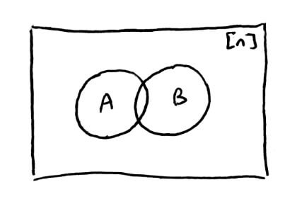
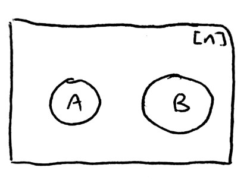
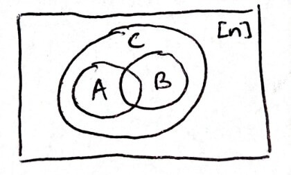
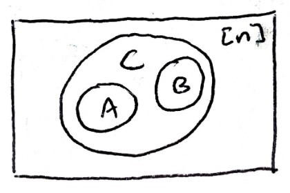

Combinatorics
(or as I like to call it, combinatrix)
Shortcut to this page: aln.netlify.com/comb
Formulas
Number of subsets: `sum_(k=0)^n ((n),(k)) = 2^n`
Pascal's Identity: `((n),(k)) + ((n),(k-1)) = ((n+1),(k))`
Number of `k`-element multisets: `((n+k-1),(k))`
Number of weak compositions into `k` parts: `((n+k-1),(n))`
Number of compositions into `k` parts: `((n-1),(n-k)) = ((n-1),(k-1))`
Number of compositions into all possible parts: `2^(n-1)`
Number of set partitions into `k` blocks: `S(n,k) = S(n-1,k-1) + k*S(n-1,k)`
Number of all set partitions: `B(n+1) = sum_(i=0)^n ((n),(i))B(i)`
Binomial Theorem: `(x+y)^n = sum_(i=0)^n ((n),(i)) x^iy^(n-i)`
Multinomial Theorem: `(x_1+x_2+...+x_k)^n = sum_(((a_1,a_2,...,a_k))) ((n),((a_1, a_2, ..., a_k))) x_1^(a_1)x_2^(a_2)...x_k^(a_k)`
`sum_(n ge 0) x^n = 1/(1-x)`
Binomial Theorem (General): `(1+x)^m = sum_(n ge 0)((m),(n))x^n`
`((-d),(n)) = (-1)^n((d+n-1),(n))`
`(1+x)^(-d) = sum_(n ge 0) (-1)^n((d+n-1),(n))x^n`
Product of ogf: `A(x)B(x) = sum_(n ge 0)(sum_(i=0)^na_ib_(n-i))x^n`
Composition of ogf: `B(A(x)) = sum_(n ge 0) b_nA(x)^n`
Catalan numbers: `C_n = 1/(n+1) ((2n),(n))`
Catalan numbers (recurrence): `C_n = sum_(i = 0)^(n-1)C_iC_(n-1-i)`
Product of egf: `A(x)B(x) = sum_(n ge 0)(sum_(i=0)^n((n),(i))a_ib_(n-i))x^n/(n!)`
Induction
Theorem: There are `2^n` subsets of a set of size `n`
Let `P(n)` be the statement that there are `2^n` subsets of a set of size `n`
For a set with `0` elements, the only subset is `O/`, which is consistent with `2^0 = 1` so `P(0)` is true
Suppose `P(n)` is true. Want to show `P(n+1)` is true, i.e. there are `2^(n+1)` subsets of a set of size `n+1`
Let `S` be a set of size `n+1`
Fix any `x in S` and consider `S' = S\\{x}`
Since `S'` has `n` elements, there are `2^n` subsets
Every subset of `S` either contains `x` or it doesn't contain `x`
The subsets that don't contain `x` are in `S'`, which has `2^n` subsets
So there are `2^n` subsets that don't contain `x`
The subsets that do contain `x` can be obtained by adding `x` to each subset that doesn't contain `x`
So there are `2^n` subsets that do contain `x`
The total number of subsets of `S` is the number of subsets containing `x` plus the number of the subsets not containing `x`
So the total number of subsets of `S` is `2^n + 2^n = 2^(n+1)`
So `P(n+1)` is true
`sum_(i=0)^n i = (n*(n+1))/2`
Let `P(n)` be the statement `sum_(i=0)^n i = (n*(n+1))/2`
For `n=0`, `sum_(i=0)^0 i = 0` and `(0*(0+1))/2 = 0` so `P(0)` is true
Suppose `P(n)` is true. Want to show `P(n+1)` is true, i.e. `sum_(i=0)^(n+1) i = ((n+1)(n+2))/2`
`sum_(i=0)^(n+1) i = sum_(i=0)^n i + (n+1)`
`= (n*(n+1))/2 + (n+1)`
`= (n^2 + n)/2 + (2(n+1))/2`
`= (n^2 + n)/2 + (2n + 2)/2`
`= (n^2 + 3n + 2)/2`
`= ((n+1)(n+2))/2`
So `P(n+1)` is true
`4n lt 2^n` for `n ge 5`
Let `P(n)` be the statement `4n lt 2^n` for `n ge 5`
For `n=0`, `4*0 = 0 lt 2^0 = 1` so `P(0)` is true
Suppose `P(n)` is true. Want to show `P(n+1)` is true, i.e. `4n+4 lt 2^(n+1)`
`2^(n+1) = 2*2^n`
`= 2^n + 2^n`
`gt 4n + 4n`
`gt 4n + 4` (since `n ge 5`)
So `P(n+1)` is true
Every polynomial in `x` is a linear combination of `1, x-1, (x-1)^2, (x-1)^3, ...`
Let `P(n)` be the statement that every polynomial of degree `n` in `x` is a linear combination of the powers of `x-1`
For `n=0`, the polynomial of degree `0` is a constant `c`, which is a linear combination of `1` (`c = c*1`) so `P(0)` is true
Suppose `P(0), P(1), P(2), ... P(n)` is true. Want to show `P(n+1)` is true, i.e. every polynomial of degree `n+1` in `x` is a linear combination of the powers of `x-1`
Let `f(x)` be a polynomial of degree `n+1`
Let `alpha` be the leading coefficient of `f`
Consider `g(x) = f(x) - alpha*(x-1)^(n+1)`
`g(x)` is a polynomial of degree `le n` so it is a linear combination of the powers of `x-1`
`f(x) = g(x) + alpha*(x-1)^(n+1)`
`alpha*(x-1)^(n+1)` is also a linear combination of the powers of `x-1`
So `f(x)` is a linear combination of the powers of `x-1`
So `P(n+1)` is true
Every positive integer can be written as `2^rm` where `r ge 0` and `m` is an odd integer
Let `P(n)` be the statement that `n` can be written as `2^rm` where `r ge 0` and `m` is odd
For `n=1`, `1 = 2^0*1 = 1` so `P(1)` is true
Suppose `P(1), ..., P(n)` is true. Want to show `P(n+1)` is true, i.e. `n+1` can be written as `2^rm` where `r ge 0` and `m` is odd
Suppose `n+1` is odd. Then pick `r=0` and pick `m = n+1` so `P(n+1)` is true
Suppose `n+1` is even
Then it can be written as `n+1 = 2k` for some integer `1 le k le n`
Since `k` is a positive integer, it can be written as `2^rm` where `r ge 0` and `m` is odd
`n+1 = 2k`
`= 2*2^rm`
`= 2^(r+1)m`
`m` is odd and `r ge 0 implies r+1 ge 0` so `k+1` can be written as a power of `2` multiplied by an odd number
So `P(n+1)` is true
Every integer `n ge 2` can be written as a product of prime numbers
Let `P(n)` be the statement that `n` can be written as a product of prime numbers
For `n=2`, `2` is a product of `2`, which is a prime number so `P(2)` is true
Suppose `P(2), ..., P(n)` is true. Want to show `P(n+1)` is true, i.e. `n+1` can be written as a product of prime numbers
Suppose `n+1` is prime. Then it is a product of itself so `P(n+1)` is true
Suppose `n+1` is not prime
Then `n+1` can be written as `n+1 = a*b` for integers `a,b` where `2 le a,b le n`
Since `2 le a,b le n`, `a` and `b` can be written as products of prime numbers
So `n+1` is a product of prime numbers
So `P(n+1)` is true
Let `f` be a function so that `f(0)=1`, `f(1)=2`, and `f(n+1)=f(n-1)+2f(n)` for `n ge 1`. `f(n) le 3^n` for `n ge 0`
Let `P(n)` be the statement that `f(n) le 3^n` for `n ge 0`
For `n=0`, `f(0) = 1 le 3^0 = 1`
For `n=1`, `f(1) = 2 le 3^1 = 3`
So `P(0)` and `P(1)` are true
Suppose `P(n)` is true. Want to show that `P(n+1)` is true, i.e. `f(n+1) le 3^(n+1)`
`f(n+1) = f(n-1)+2f(n)`
`le 3^(n-1) + 2*3^n`
`= 3^(n-1) + 3^n + 3^n`
`le 3^n + 3^n + 3^n`
`= 3*3^n`
`= 3^(n+1)`
So `P(n+1)` is true
Permutations
Given a set `S` of objects, a permutation of `S` is a way to put all elements of `S` in order
For `S = {1,2,3}`, all the permutations are:
`1,2,3`
`1,3,2`
`2,1,3`
`2,3,1`
`3,1,2`
`3,2,1`
Theorem: If `S` has `n gt 0` elements, then there are `n!` permutations of the elements in `S`
Let `P(n)` be the statement that if `S` has `n gt 0` elements, then there are `n!` permutations of the elements of `S`
For a set of size `1`, there's only `1` way to order all the elements. `1 = 1!` so `P(1)` is true
Suppose `P(n)` is true. Want to show `P(n+1)` is true, i.e. if `S` has `n+1` elements, then there are `(n+1)!` permutations of the elements in `S`
Let `S` be a set of size `n+1`
We could pick any random element of `S` and put that in the first spot
Now, `S` has `n` elements
So there are `n!` ways to order the remaining elements in `S`
There were `n+1` choices for the random element in the first spot
So the total number of ways to order the elements is `(n+1)*n! = (n+1)!`
So `P(n+1)` is true
Intuitively, there are `n` choices for the first digit, `n-1` choices for the second digit, `n-2` choices for the third digit, ..., all the way down to `1` choice for the last digit
So there are `n*(n-1)*(n-2)*...*1 = n!` ways to order the elements
Combinations
Let's suppose you're arranging flowers. You have `2` red flowers and `1` yellow flower. How many ways can we arrange them? Previously, we saw that if we have `n` elements, there are `n!` ways to arrange them. Here, we have `3` elements, so there are `3! = 6` ways to arrange them. All the possible orderings are:
`R RY`
`R RY`
`YR R`
`YR R`
`RYR`
`RYR`
But some of the orderings are repeated. This is because the `2` red flowers are technically different flowers, but the order in which they appear doesn't matter; the result is the same. So we have to divide out the commonalities. In this case, since there are `2` red flowers and, therefore, `2!` ways to order them, we divide the total number of ways to arrange all the elements by `2!`.
`(3!)/(2!) = 3`
`R RY`
`YR R`
`RYR`
If we have `10` red flowers and `5` yellow flowers, then the total number of ways to arrange them is
`(15!)/(10!5!)`
If we have `r` red flowers, `y` yellow flowers, and `b` blue flowers, then the total number of ways to arrange them is
`((r+y+b)!)/(r!y!b!)`
Theorem: Say we have `n` objects which have one of `k` different types. Objects of the same type are considered identical. Label the types with numbers `1,2,...,k` and let `a_i` be the number of objects of type `i`. Then the number of ways to arrange the `n` objects is `(n!)/(a_1!a_2!...a_k!)`
The multinomial coefficient is `((n),((a_1,a_2,...,a_k))) = (n!)/(a_1!a_2!...a_k!)`
The binomial coefficient is the multinomial coefficient for `k=2`, which is `((n),((a_1,a_2)))`. It's often denoted by `((n),(a_1))` instead because we know `a_2 = n - a_1`
Words
Sometimes, it's easier to count things by using some sort of encoding.
A word is a finite ordered sequence whose entries are drawn from some set `A`, called the alphabet
The length of a word is the number of entries it has
Entries may be repeated
An empty sequence `O/` is a word of length `0`
Consider the alphabet `A = {a,b}`
The words of length `le 2` are:
`O/`
`a`
`b`
`aa`
`ab`
`ba`
`bb`
Theorem: If `|A| = n`, then the number of words of length `k` is `n^k`
Since there are `n` choices for each spot and there are `k` spots, there are `ubrace(n*n*...*n)_k = n^k` words of length `k`
`[n] = {1,2,...,n}`
The number of subsets of `[n]` is `2^n`
Let `S sube [n]`
Define a word `w_s` of length `n` in the alphabet `{0,1}` as follows:
Let `i in [n]`
If `i in S`, then the `i^(th)` entry of `w_s = 1`
If `i notin S`, then the `i^(th)` entry of `w_s = 0`
We have a function `f:{text(subset ) S text( of ) [n]} rarr {text(word of length ) n text( in alphabet ) {0,1}}`
We can define another function `g:{text(words of length ) n text( in ) {0,1}} rarr {text(subset of ) [n]}` to be the inverse of `f`
This means `f` is bijective
So `|{text(subsets of )[n]}| = |{text(words of length )n text( in ) {0,1}}| = 2^n`
If `n = 5` and `S = {1,3,4}`, then the word associated with `S` is `10110`
The general idea is that any element is either in `S` or not in `S`
How many pairs of subsets `S,T sube [n]` satisfy `S sube T`?
A similar idea applies here: any element is
- in `S` and in `T`
- not in `S` but in `T`
- not in `S` and not in `T`
There are `3` choices for each of the `n` elements, so there are `3^n` total possibilities
`f:{text(pairs of subsets ) S,T sube [n] s.t. S sube T} rarr {text(words of length ) n text( in ) {text(in ) S, text( not in ) S text( but in ) T, text( not in ) S text( and not in ) T}}`
For `n ge k` where `n` is a nonnegative integer, the falling factorial is `(n)_k = n*(n-1)*(n-2)*...*(n-k+1)`
`(6)_3 = 6*5*4`
`(6)_6 = 6*5*4*3*2*1`
Theorem: If `|A| = n ge k`, then there are `(n)_k` words of length `k` in `A` that do not have repeating entries
Let `sigma = a_1a_2...a_ka_(k+1)...a_n` be a permutation of `A`
The first `k` entries make up a word with no repeating entries
Since there are `n!` permutations, we have `n!` words with no repeating entries
But there are repeated words since the last `(n-k)` entries can be ordered in any way
So there are `(n!)/((n-k)!) = (n*(n-1)*...*(n-k+1)*(n-k)!)/((n-k)!) = (n)_k` words with no repeating entries
Let `A = {1,2,3,4,5}` and `k=3`
Let `sigma = 31254`
The first `k` entries are `312`, which is a word of length `k` with no repeating entries
So that is contained in `31254`
But that same word is also contained in `31245`
Intuitively, there are `n` choices for the first digit, `n-1` choices for the second digit, ..., `n-k+1` choices for the `k^(th)` digit
Choice Problems
We saw earlier that the number of subsets of a set of size `n` is `2^n`. We could look at how many of those subsets are of size `k`.
Theorem: The number of `k`-element subsets of `[n]` is `((n),(k)) = (n!)/(k!(n-k)!)`
We can associate subsets of `[n]` with words of length `n` in `{0,1}`
The number of `k`-element subsets of `[n]` is the number of words of length `n` in `{0,1}` that have exactly `k` `1`'s
For such words, there are `k` ways to arrange the `1`'s and `n-k` ways to arrange the `0`'s
Which gives us `(n!)/(k!(n-k)!) = ((n),(k))`
Corollary: `sum_(k=0)^n ((n),(k)) = 2^n`
`sum_(k=0)^n ((n),(k))` is the number of ways to choose subsets of size `0`, `1`, `2`, ..., `n`
Well, that should make up all the possible subsets
Before, we showed that the total number of subsets is `2^n`
Pascal's Identity: For any `k ge 0`, `((n),(k-1)) + ((n),(k)) = ((n+1),(k))`
`((n+1),(k))` is the number of `k`-element subsets of `[n+1]`
We could split those subsets up into two categories: subsets of size `k` that contain `n+1` and subsets of size `k` that don't contain `n+1`
The subsets of size `k` that don't contain `n+1` are actually the subsets of size `k` of `[n]`, so that gives us `((n),(k))`
If we look at the subsets of size `k` that do contain `n+1` and remove `n+1` from each subset, we end up with the number of subsets of size `k-1` of `[n]`, which gives us `((n),(k-1))`
Counting Poker Hands
Four of a Kind: `4` of the `5` cards have the same value
There are `13` choices for the value that is the same
There are `48` choices for the fifth card
Total number of ways to get a four of a kind: `13*48`
Full House: `3` cards have the same value and `2` cards have the same value
There are `13` choices for the value of the triple
There are `12` choices for the value of the pair
There are `((4),(3))` choices for the suits of the triple
There are `((4),(2))` choices for the suits of the pair
Total number of ways to get a full house: `13*12*((4),(3))*((4),(2))`
Two Pair: `2` cards have the same value, `2` cards have the same value, `1` card has a different value
There are `((13),(2))` choices for the value of one pair
There are `((4),(2))` choices for suits of one pair
There are `((4),(2))` choices for suits of other pair
There are `44` choices for the leftover card
Total number of ways to get a two pair: `((13),(2))*((4),(2))*((4),(2))*44`
Straight: `5` cards can be put in consecutive order by values
To pick values, we only need to know what the largest possible values are
The fifth card can be `5`, `6`, `7`, `8`, `9`, `10`, `J`, `Q`, `K`, or `A`
There are `10` choices for the fifth card
There are `4^5` choices for the suits of each card
Total number of ways to get a straight: `10*4^5`
Multisets
Multisets are like subsets except the elements can be repeated.
Multisets of `{1,2,3}` of size `3` are:
`{1,1,1}`
`{1,1,2}`
`{1,1,3}`
`{1,2,2}`
`{1,2,3}`
`{1,3,3}`
`{2,2,2}`
`{2,2,3}`
`{2,3,3}`
`{3,3,3}`
Are these all the possible multisets? How can we be sure?
Let's add `1` to the second element and add `2` to the third element.
`{1,1,1} rarr {1,2,3}`
`{1,1,2} rarr {1,2,4}`
`{1,1,3} rarr {1,2,5}`
`{1,2,2} rarr {1,3,4}`
`{1,2,3} rarr {1,3,5}`
`{1,3,3} rarr {1,4,5}`
`{2,2,2} rarr {2,3,4}`
`{2,2,3} rarr {2,3,5}`
`{2,3,3} rarr {2,4,5}`
`{3,3,3} rarr {3,4,5}`
Notice that we end up with all the subsets of size `3` of `[5]`. This leads to a more general result.
Theorem: The number of `k`-element multisets of a set of size `n` is `((n+k-1),(k))`
Note: it doesn't matter what the set is, since we can form a bijection between the set and `[n]`
Let `S` be a multiset of size `k` of `[n]`
Sort the elements of `S` so that `s_1 le s_2 le s_3 le ... le s_k`
Add `i-1` to each `s_i`
Then we get `s_1 lt s_2 + 1 lt s_3 + 2 lt ... lt s_k + (k-1)`
Well, `{s_1, s_2+1, s_3+2, ..., s_k+(k-1)}` is a subset of size `k` of `[n+k-1]color(red)(text(*))`
The number of ways to make `k`-element subsets from a set of size `[n+k-1]` is `((n+k-1),(k))`
(Reversing the process -- subtracting `i-1` from each `s_i` -- shows that there is a bijection between `{s_1, s_2, ..., s_k}` and `{s_1, s_2+1, ..., s_k+(k-1)}`)
`color(red)(text(*))` happens when `s_k = n`
Let `x`,`y`,`z` be variables. `deg(x^a,y^b,z^c) = a+b+c` and `a,b,c ge 0`
How many products have degree `d`?
`d = 1:`
`x, y, z` (`3`)
`d = 2:`
`x^2, y^2, z^2, xy, xz, yz` (`6`)
`d = 3:`
`x^3, y^3, z^3, x^2y, x^2z, y^2x, y^2z, z^2x, z^2y, xyz` (`10`)
`x^ay^bz^c` is a multiset of `{x,y,z}` where `x` appears `a` times, `y` appears `b` times, and `z` appears `c` times
So the total number of products is the number of multisets of size `d` of `{x,y,z}`, which is `((d+3-1),(d)) = ((d+2),(d))`
`x_1^(a_1)*x_2^(a_2)*...*x_n^(a_n)` is a multiset of `{x_1,x_2,...,x_n}` where `x_i` is chosen `a_i` times
The total number of products `x_1^(a_1)*...*x_n^(a_n)` with `a_1 + ... + a_n = d` is the number of multisets of size `d` of a set of size `n`, which is `((n+d-1),(d))`
Compositions
A weak composition of `n` into `k` parts is a `k`-tuple `(a_1,a_2,...,a_k)` such that each `a_i ge 0` and `a_1 + a_2 + ... + a_k = n`
A composition is the same except each `a_i gt 0`
`k` is the number of parts
A weak composition is like putting `n` identical balls into `k` distinct boxes
A composition is an assignment that is surjective, i.e. every box has at least `1` ball
Theorem: The number of weak compositions of `n` into `k` parts is `((n+k-1),(n))`
Claim: There is a bijection between weak compositions of `n` into `k` parts and `n`-element multisets of `[k]`
Given a weak composition `(a_1,...,a_k)`, we get a multiset that has the `i^(th)` element `a_i` times
Since `a_1 + ... + a_k = n`, this is an `n`-element multiset of `[k]`
Given an `n`-element multiset of `[k]`, let `a_i` be the number of times that `i` appears in the multiset
Then we end up with a weak composition `(a_1,...,a_k)` of `n`
Intuitively, a multiset is a weak composition that is written out. Since the parts of the weak composition have to add up to `n`, there are `n` elements in the multiset. So the formula for an `n`-element multiset applies here.
`((n+k-1),(n)) = ((n+k-1),(n+k-1-n)) = ((n+k-1),(k-1))`
How many ways are there to distribute `20` identical pieces of candy to `4` different children?
This can be seen as a weak composition of `20` into `4` parts
`((23),(20))`
How many ways can we distribute all the candy so that no child is candyless?
First, we can give each child `1` piece of candy
Now, we have `16` pieces of candy leftover which can be distributed in any way
So this can be seen as a weak composition of `16` into `4` parts
`((19),(16))`
Since each child has at least `1` candy, this is also a composition of `20` into `4` parts
Corollary: The number of compositions of `n` into `k` parts is `((n-1),(n-k))`
Generalizing the previous example, there is a bijection between compositions of `n` into `k` parts and weak compositions of `n-k` into `k` parts
`(((n-k)+k-1),(n-k)) = ((n-1),(n-k)) = ((n-1),(n-1-(n-k))) = ((n-1),(k-1))`
Corollary: The number of compositions of `n` into any number of parts is `2^(n-1)`
The possible number of parts for a composition of `n` ranges from `k = 1` to `k = n`
So the total number of compositions possible is
`sum_(k=1)^n((n-1),(k-1))`
`= sum_(k=0)^(n-1)((n-1),(k))`
Well, that is the formula for the number of subsets of `[n-1]`, which is `2^(n-1)`
A composition can be represented as `(1square1square...square1square1)` where we either put a `+` (plus sign) or a `,` (comma) in the boxes.
There are `n` `1's`, so there are `n-1` boxes
There are `2` choices for each box
So there are `2^(n-1)` total compositions
Set Partitions
Let `X` be a set. A partition of `X` is an unordered collection of nonempty subsets `X_1,...,X_k` such that every element of `X` belongs to exactly one subset
An ordered partition of `X` is the same except each subset has an order
Each subset is a block of the partition
A set partition is like putting `n` distinct balls into `k` identical boxes
There are `5` partitions of `X = {1,2,3}`:
`k = 1:`
`{{1,2,3}}`
`k = 2:`
`{{1},{2,3}}`
`{{2},{1,3}}`
`{{3},{1,2}}`
`k = 3:`
`{{1},{2},{3}}`
For an unordered collection of subsets, `{{3},{1,2}}` and `{{1,2},{3}}` are the same
How many ways are there to distribute `20` different pieces of candy to `4` identical children so that no child is candyless?
This can be seen as a partition of `[20]` into `4` blocks
Let `S(n,k)` be the number of partitions of a set of size `n` into `k` blocks
These are called Stirling numbers of the second kind
`S(0,0) = 1` and `S(n,k) = 0` if `k gt n`
`S(n,1) = 1`
`n` pieces into `1` block: put all pieces into the block
`S(n,n) = 1`
`n` pieces into `n` blocks: put each piece in each block
`S(n,2) = 2^(n-1)-1`
`n` pieces into `2` blocks:
- can't have `O/` or the whole set `implies 2^n-2` complementary subsets
- the order of each block doesn't matter `implies` divide by `2`
- `(2^n-2)/2 = 2^(n-1)-1`
`S(n,n-1) = ((n),(2))`
`n` pieces into `n-1` blocks: one block must have `2` pieces, choose `2` elements to be in the same block
Theorem: If `k le n`, then `S(n,k) = S(n-1,k-1) + k*S(n-1,k)`
Consider two kinds of partitions of `[n]`
The first kind is partitions where `n` is in its own block
Removing that block, we end up with a partition of `n-1` into `k-1` blocks, which is `S(n-1,k-1)`
The second kind of partition is the partitions where `n` is not in its own block
Removing `n` from each partition, we end up with a partition of `n-1` into `k` blocks
But by doing so, we can't reconstruct the original situation because we don't know which block it came from
There are `k` blocks we could put `n` in `implies k` different ways to reconstruct the original situation
So the number of partitions is `k*S(n-1,k)`
Adding up both types of partitions gives us all the partitions of `[n]`
From before, `S(n,2) = 2^(n-1)-1`
`S(n,2) = S(n-1,1) + 2*S(n-1,2)`
`= 1 + 2*S(n-1,2)`
`= 1 + 2*(2^(n-2)-1)`
`= 1 + 2^(n-1)-2`
`= 2^(n-1)-1`
The Bell numbers are the number of partitions of `[n]` into any number of blocks
`B(n) = sum_(k=0)^nS(n,k)`
`B(0) = 1`
Theorem: `B(n+1) = sum_(i=0)^n ((n),(i)) B(i)`
Separate all the partitions of `[n+1]` based on the number of elements in the block that contains `n+1`
Consider those partitions where the block containing `n+1` is of size `j`
For the block containing `n+1`, there are `n` numbers to choose from and `j-1` spots, so there are `((n),(j-1))` ways to generate such a block
Now, there are `n+1-j` elements remaining
For the other blocks not containing `n+1`, they can be generated by looking at the number of partitions of `[n+j-1]`, i.e. `B(n+j-1)`
So the number of partitions where the block containing `n+1` is of size `j` is `((n),(j-1)) B(n+1-j)`
The possible sizes of blocks containing `n+1` range from `1` to `n+1`
`sum_(j=1)^(n+1) ((n),(j-1)) B(n+1-j)`
set `i = j-1`
`sum_(i=0)^n ((n),(i)) B(n-i)`
set `k = n-i`
`sum_(k=0)^n ((n),(n-k)) B(k)`
`sum_(k=0)^n ((n),(k)) B(k)`
Integer Partitions
A partition of `n` is a sequence of nonnegative integers `lambda_1 ge lambda_2 ge ... ge lambda_k ge 0` such that `lambda_1 + lambda_2 + ... + lambda_k = n`
`lambda = (lambda_1, lambda_2, ..., lambda_k)` is a partition
`|lambda| = lambda_1 + lambda_2 + ... + lambda_k`
`l(lambda) = ` number of positive `lambda_i`
An integer partition is like putting `n` identical balls into `k` identical boxes
`p(n) = ` number of partitions of `n`
`p_k(n) = ` number of partitions of `n` such that `l(lambda) = k` (has `k` parts)
`p(5) = 7`
`(5)`
`(4,1)`
`(3,2)`
`(3,1,1)`
`(2,2,1)`
`(2,1,1,1)`
`(1,1,1,1,1)`
Partitions can be represented using Young diagrams. The `i^(th)` row has `lambda_i` boxes.
`lambda = (4,2,1)`
The transpose (or conjugate) of a partition `lambda` is the partition `lambda^T` whose Young diagram is `Y(lambda)` flipped across the main diagonal
`(lambda^T)^T = lambda`
`lambda_i^T = {j|lambda_j ge i}`
`lambda^T = (3,2,1,1)`
`lambda` is self-conjugate if `lambda = lambda^T`
Some self-conjugate partitions are `(4,3,2,1)`, `(5,1,1,1,1)`, `(4,2,1,1)`
Theorem: The number of partitions `lambda` of `n` with `l(lambda) le k` equals the number of partitions `mu` of `n` with `mu_i le k`
Example: `n=5, k=2`
`(5)`
`(4,1)`
`(3,2)`
`(1,1,1,1,1)`
`(2,1,1,1)`
`(2,2,1)`
Notice that taking the transpose of `lambda` gives us `mu`
Claim: There is a bijection between `A = {text(partitions ) lambda text( of ) n text( with ) l(lambda) le k}` and `B = {text(partitions ) mu text( of ) n text( such that ) mu_i le k}`
Let `f:A rarr B` be a function defined to be `f(lambda) = lambda^T`
Since `(lambda^T)^T = lambda`, `f circ f` is the identity function
So `|A| = |B|`
Theorem: The number of self-conjugate partitions `lambda` of `n` equals the number of partitions `mu` of `n` with only odd and distinct parts
Start with a Young diagram of `lambda`
Take the boxes of the first row and column and put them all in a row
Make that row the first row of `mu`
Repeat this for all the rows/columns of the `lambda`
Informally, peel off the outer layer of `lambda` and straighten it out to become a row in `mu`
This process is reversible, so there is a bijection
Informally, fold the row of `mu` in half and make it the outer layer of `lambda`
Since `lambda` is self-conjugate, there are an odd number of parts in the `i^(th)` row and column
`mu_i = lambda_i-(i-1) + lambda_i^T - (i-1) - 1`
The `i^(th)` row of `mu` is the `i^(th)` row of `lambda` minus the boxes to the left plus the `i^(th)` rows of `lambda^T` minus the boxes from the top minus `1` for the box in the top-left corner
`mu_i = 2lambda_i - 2i + 1`
Claim: `mu_1 gt mu_2 gt ...`
`mu_i = 2lambda_i - 2i + 1`
`mu_(i+1) = 2lambda_(i+1) - 2(i+1) + 1`
Since `lambda` is a partition, `lambda_i ge lambda_(i+1)`
So `mu_i = 2lambda_i - 2i + 1 ge 2lambda_(i+1)-2(i+1)+1 = mu_(i+1)`
Binomial Theorem
The binomial theorem provides a formula for expanding powers of `x+y`.
`(x+y)^2 = x^2 + 2xy + y^2`
`(x+y)^3 = x^3 + 3x^2y + 3xy^2 + y^3`
`(x+y)^n = ?`
Theorem: For `n ge 0`, `(x+y)^n = sum_(i=0)^n ((n),(i)) x^iy^(n-i)`
Consider the expansion `(x+y)^n = ubrace((x+y)(x+y)...(x+y))_n`
In terms of FOIL, multiply in the following manner:
FFF...F (`x*x*x*...*x`)
FFF...L (`x*x*x*...*y`)
FFF...LF (`x*x*x*...*y*x`)
FFF...LFF (`x*x*x*...*y*x*x`)
`vdots`
And repeat until all possible terms have been multiplied (`2^n` times)
Some terms will be repeated. For example, FFF...L (`x*x*x*...*y`) and FFLF...F (`x*x*y*x*...*x`) both have `n-1` `x's` and `1` `y`
The number of repeated terms is the number of ways to create a term that has that form
The form of each term will be `i` `x's` and `n-i` `y's`
Which gives us `((n),(i))` ways to create `x^iy^(n-i)`
To get the final answer, we sum up all the products
The sum goes from `0` to `n` because we have situations where `x` appears `0` times and `x` appears `n` times
There are several identities that can be obtained by substituting values for `x` and `y`.
Let `x=y=1`
Then we get `2^n = sum_(i=0)^n ((n),(i))`, which was proven earlier
Let `x=-1`, `y=1`
Then we get `0 = sum_(i=0)^n (-1)^i((n),(i))`
There's an interesting result when we expand the sum:
`((n),(0))-((n),(1))+((n),(2))-((n),(3))+...+(-1)^n((n),(n)) = 0`
`((n),(0))+((n),(2))+... = ((n),(1))+((n),(3))+...`
`sum_(i text( even)) ((n),(i)) = sum_(i text( odd)) ((n),(i))`
This means the number of subsets with even size equals the number of subsets with odd size
So there are `(2^n)/2 = 2^(n-1)` subsets with even size (and likewise for subsets with odd size)
We can also obtain another identity by taking the derivative.
Applying `del/(delx)`, we get
`n(x+y)^(n-1) = sum_(i=0)^n i ((n),(i))x^(i-1)y^(n-i)`
`= sum_(i=1)^n i ((n),(i)) x^(i-1)y^(n-i)`
Setting `x=y=1`, we get `n2^(n-1)=sum_(i=1)^n i ((n),(i))`
The right-hand side counts the number of ways to pick a subset of `[n]` and an element in that subset
`|{(x,S)|S sube [n], x in S}|`
First, pick a subset `S` of size `i`: `((n),(i))` ways to to this
Then, pick an element `x` in `S`: `i` ways to to this
This is like picking members to be in a group, then picking a leader
The left-hand side tells a similar story
First, pick an element `x` to put in the subset `S`: `n` ways to do this
Then, pick the remaining elements to put in the subset `S`: `2^(n-1)` ways to do this
This is like picking a leader, then the group members
Multinomial Theorem
The multinomial theorem is a generalization of the binomial theorem.
For `n,k ge 0`,
`(x_1+x_2+...+x_k)^n = sum_(((a_1,a_2,...,a_k))) ((n),((a_1, a_2, ..., a_k))) x_1^(a_1)x_2^(a_2)...x_k^(a_k)`
where `a_i ge 0` and `a_1 + ... + a_k = n`
The proof is similar to the proof for the binomial theorem
The number of times `x_1^(a_1)x_2^(a_2)...x_k^(a_k)` appears is equal to the number of ways to choose each `x_i` exactly `a_i` times, which is `((n),((a_1,a_2,...,a_k)))`
Example: `(x_1+x_2+x_3)^3`
`= ((3),((3,0,0)))x_1^3 + ((3),((0,3,0)))x_2^3 + ((3),((0,0,3)))x_3^3`
`+ ((3),((2,1,0)))x_1^2x_2 + ((3),((2,0,1)))x_1^2x_3 + ((3),((1,2,0)))x_1x_2^2`
`+ ((3),((0,2,1)))x_2^2x_3 + ((3),((1,0,2)))x_1x_3^2 + ((3),((0,1,2)))x_2x_3^2`
`+ ((3),((1,1,1)))x_1x_2x_3`
`= x_1^3+x_2^3+x_3^3+3x_1^2x_2+3x_1^2x_3+3x_1x_2^2+3x_2^2x_3+3x_1x_3^2+3x_2x_3^2+6x_1x_2x_3`
`0 = sum_(((a_1,...,a_k))) (1-k)^(a_1) ((n),((a_1,...,a_k)))`
Set `x_1 = 1-k`, `x_2 = ... = x_k = 1`
`nk^(n-1) = sum_(((a_1,...,a_k))) a_1 ((n),((a_1,...,a_k)))`
Apply `del/(delx_1)` and set `x_1 = ... = x_k = 1`
Formal Power Series
A formal power series is a way to encode a sequence of numbers as an algebraic object. The numbers are the coefficients of some (infinite) polynomial.
A formal power series (in variable `x`) is an expression of the form `sum_(n=0)^(oo) a_nx^n = A(x)` where `a_n` are scalars
Alteratively, it can be written as `sum_(n ge 0) a_nx^n`
Let `[x^n]A(x) = a_n` be the coefficient of `x^n`
Some special cases of formal power series are polynomials and scalars. Polynomials are formal power series where all the terms after a certain point are zero. Scalars are formal power series where `a_0` is a scalar and the rest of the terms are zero.
Two power series are equal if and only if all of their coefficients match
`A(x) = B(x)` if and only if `[x^n]A(x) = a_n = b_n = [x^n]B(x)` for all `n`
Let `A(x) = sum_(n ge 0) a_nx^n` and `B(x) = sum_(n ge 0) b_nx^n`
The sum of two formal power series is
`A(x)+B(x) = sum_(n ge 0) (a_n+b_n)x^n`
The product of two formal power series is
`A(x)B(x) = sum_(n ge 0) c_nx^n` where `c_n = sum_(i=0)^n a_ib_(n-i)`
the powers have to add up to `n`
Addition and multiplication are both commutative
`A(x)+B(x) = B(x)+A(x)`
`A(x)B(x) = B(x)A(x)`
and associative
`A(x)+[B(x)+C(x)] = [A(x)+B(x)]+C(x)`
`A(x)[B(x)C(x)] = [A(x)B(x)]C(x)`
Let `A(x) = B(x) = sum_(n ge 0) x^n`
`A(x)+B(x) = sum_(n ge 0) 2x^n`
`A(x)B(x) = sum_(n ge 0) (n+1)x^n`
In the multiplication, `c_n = sum_(i=0)^n a_ib_(n-i) = sum_(i=0)^n 1 = n+1`
`A(x)` is invertible if there exists `B(x)` such that `A(x)B(x) = 1`
Then `B(x) = A(x)^(-1) = 1/(A(x))`
An example of an invertible formal power series:
Let `A(x) = sum_(n ge 0) x^n`, `B(x) = 1-x`
`A(x)B(x) = sum_(n ge 0) c_nx^n` where `c_n = sum_(i=0)^n a_ib_(n-i)`
If `n=0`, then `c_0 = a_0b_0 = 1`
If `n=1`, then `c_1 = a_0b_1 + a_1b_0 = (1)(-1) + (1)(1) = 0`
If `n ge 2`, then `c_n = 0` since `B(x)` has no degree `ge 2` term
So `c_n = 1` when `n=0` and `c_n = 0` when `n gt 0` `implies A(x)B(x) = sum_(n ge 0) c_nx^n = 1`
This means `sum_(n ge 0) x^n` is invertible with inverse `1-x`
We can also see that their product is equal to `1` by manually multiplying them:
`(1+x+x^2+x^3+...)(1-x)`
`= 1+x+x^2+x^3+...`
`\ \ \ \ \ \ \ \ -x-x^2-x^3-...`
`= 1`
From this result, we get an identity:
`(sum_(n ge 0) x^n)(1-x) = 1`
`sum_(n ge 0) x^n = 1/(1-x)`
Theorem: `A(x)` is invertible if and only if `[x^0]A(x) != 0`
A formal power series is invertible if and only if the constant term is nonzero
`(lArr)`Suppose `[x^0]A(x) != 0`. Want to show `A(x)` is invertible
Consider `B(x) = sum_(n ge 0) b_nx^n` and try to pick `b_n` so that `A(x)B(x) = 1`
Expanding out the equation `A(x)B(x) = 1` and matching coefficients, we get:
`a_0b_0 = 1`
`(a_1b_0 + a_0b_1)x = 0x`
`(a_2b_0 + a_1b_1 + a_0b_2)x^2 = 0x^2`
`vdots`
Using this system of equations, we can try to find `b_n`
`a_0b_0 = 1 implies b_0 = 1/a_0`
`a_1b_0+a_0b_1 = 0 implies b_1 = -(a_1b_0)/a_0 = -a_1/(a_0)^2`
`a_2b_0+a_1b_1+a_0b_2 = 0 implies b_2 = -(a_2b_0+a_1b_1)/a_0`
At each stage, it is possible to find `b_(n+1)` since it is in terms of `b_0,...,b_n`. More formally, we can do so using induction. Suppose we have solved for `b_0, ..., b_n`. At each stage, we have
`a_(n+1)b_0 + ... + a_0b_(n+1) = 0`
So we can solve for `b_(n+1) = -(a_(n+1)b_0 + ...)/a_0`
`(implies)`If the constant term is `0`, then the equation `a_0b_0 = 1` has no solution `implies` cannot find `b_n` `implies` `A(x)` is not invertible
Intuitively, if a formal power series has no constant term, then its product with any other power series will always be a sum of powers of `x`, which can never be equal to `1`
Let `A(x),B(x)` be formal power series such that `[x^0]A(x) = 0`
The composition `(B circ A)(x) = B(A(x))` is defined by `sum_(n ge 0) b_nA(x)^n`
It looks like we're taking the sum of infinitely many things, so how is this operation well defined, i.e. how are we going to get an answer if it looks like we're adding infinitely many things?
Since `A(x)` has no constant term, we have
`A(x) = a_1x + a_2x^2 + ...`
What happens when we take powers of `A(x)`? For `A(x)^2`, there is no constant term. There is also no linear term.
`A(x)^2 = a_1^2x^2 + 2a_2a_1x^3 + ...`
Claim: `[x^i]A(x)^n = 0` for `i lt n`
Expanding `sum_(n ge 0) b_nA(x)^n`, we get
`b_0 + b_1A(x) + b_2A(x)^2 + b_3A(x)^3 + ...`
`= b_0`
`+ b_1a_1x + b_1a_2x^2 + b_1a_3x^3 + ...`
`+ b_2a_1^2x^2 + b_2 2a_2a_1x^3 + ...`
To get the coefficient of `x^n`, we only have to do a finite amount of additions. For example,
The coefficient of `x^0` is `b_0`
The coefficient of `x^1` is `b_1a_1x`
The coefficient of `x^2` is `b_1a_2x^2 + b_2a_1^2x^2`
So we will get an answer from doing this operation
If `A(x)` had a constant term, then we would end up having to do an infinite amount of additions
Let `A(x) = x^d` where `d gt 0` and `B(x) = sum_(n ge 0) x^n`
`B(A(x)) = sum_(n ge 0) (x^d)^n = sum_(n ge 0) x^(dn)`
We can substitute this into the identity `(1-x)sum_(n ge 0) x^n = 1` to get a new identity:
`(1-x^d)sum_(n ge 0) x^(dn) = 1`
`1/(1-x^d) = sum_(n ge 0) x^(dn)`
The derivative of `A`, written as `DA` or `A'`, is defined by `sum_(n ge 0) na_nx^(n-1) = sum_(n ge 0) (n+1)a_(n+1)x^n`
The familiar rules for derivatives apply to formal power series as well
`D(A+B) = DA + DB`
`D(A*B) = (DA)*B + A*(DB)` (product rule)
`D(B circ A) = (DA)(DB circ A)` (chain rule)
`D(A^(-1)) = -(DA)/A^2`
`D(A^n) = n(DA)A^(n-1)`
From before, `1/(1-x) = sum_(n ge 0) x^n`. We can use this identity to get a new identity by taking the derivative:
`1/(1-x)^2 = sum_(n ge 0) nx^(n-1) = sum_(n ge 0) (n+1)x^n`
It is possible to simplify `sum_(n ge 0) nx^n`:
`sum_(n ge 0) nx^n = x sum_(n ge 1) nx^(n-1)` (we can pull out an `x` because there's no constant term)
`= x sum_(n ge 0) (n+1)x^n`
`= x*1/(1-x)^2`
`= x/(1-x)^2`
or
`sum_(n ge 0) nx^n = sum_(n ge 0) (n+1)x^n - sum_(n ge 0) x^n`
`= 1/(1-x)^2 - 1/(1-x)`
`= (1-(1-x))/(1-x)^2`
`= x/(1-x)^2`
In either case, we get the identity
`(1-x)^2 sum_(n ge 0) nx^n = x`
Binomial Theorem (General)
The previous binomial theorem only considered nonnegative powers. Here, we consider real-numbered powers.
Let `m` be a real number and `k ge 0` be an integer
`((m),(0))=1`
`((m),(k)) = (m(m-1)(m-2)...(m-k+1))/(k!)`
Theorem: `(1+x)^m = sum_(n ge 0) ((m),(n)) x^n`
Consider `-1` as a power: `m=-1`
From before,
`1/(1-x) = sum_(n ge 0) x^n`
Substituting `-x` for `x`,
`1/(1+x) = sum_(n ge 0) (-x)^n = sum_(n ge 0) (-1)^nx^n`
Using the binomial theorem, we should get the same result
From the binomial theorem: `(1+x)^(-1) = sum_(n ge 0) ((-1),(n))x^n`
`((-1),(n)) = ((-1)(-2)(-3)...(-1-n+1))/(n!)`
`= ((-1)^n n!)/(n!)`
`= (-1)^n`
So the equation obtained from the binomial theorem matches the one from the formal power series
Consider any negative power: `m=-d` where `d gt 0` is an integer
We could try to see what it evaluates to without using the binomial theorem, but it gets pretty complicated
`(1+x)^(-d) = (1/(1+x))^d`
`= (sum_(n ge 0) (-1)^nx^n)^d`
Using the binomial theorem: `(1+x)^(-d) = sum_(n ge 0) ((-d),(n)) x^n`
`((-d),(n)) = ((-d)(-d-1)(-d-2)...(-d-n+1))/(n!)`
`= (-1)^n((d)(d+1)(d+2)...(d+n-1))/(n!)`
`= (-1)^n((d-1)!(d)(d+1)...(d+n-1))/((d-1)!n!)`
`= (-1)^n((d+n-1)!)/((d-1)!n!)`
`= (-1)^n((d+n-1),(n))`
So `(1+x)^(-d) = 1/(1+x)^d = sum_(n ge 0) (-1)^n((d+n-1),(n))x^n`
If we substitute `-x` for `x`, we get
`(1-x)^(-d) = 1/(1-x)^d = sum_(n ge 0) (-1)^n((d+n-1),(n))(-x)^n = sum_(n ge 0) ((d+n-1),(n))x^n`
Consider a fractional power: `m=1/2`
`(1+x)^(1/2)` is a formal power series whose square is `(1+x)`
Using the binomial theorem: `(1+x)^(1/2) = sum_(n ge 0) ((1/2),(n))x^n`
`((1/2),(n)) = ((1/2)(-1/2)(-3/2)...(-1/2-n+1))/(n!)`
`= (-1)^(n-1)((1/2)(1/2)(3/2)(5/2)...((2n-1)/2))/(n!)`
`= (-1)^(n-1)(3*5*7*...*2n-1)/(2^n n!)`
which doesn't really simplify further (unless we introduce the double factorial)
However, this means we've found the square root of a formal power series
`(sum_(n ge 0) ((1/2),(n))x^n)^2 = 1+x`
Given a quadratic equation, `A(x)t^2+B(x)t+C(x) = 0` where `A(x),B(x),C(x)` are formal power series, the solutions `t` are given by the quadratic formula
`t = (-B(x) +- sqrt(B(x)^2-4A(x)C(x)))/(2A(x))`
if `A(x)` is invertible
Ordinary Generating Functions
Ordinary generating functions are a way to encode a sequence of numbers as a formal power series.
Given a sequence of numbers `a_0, a_1, a_2, ...`, the ordinary generating function (ogf) is `A(x) = sum_(n ge 0) a_nx^n`
Linear Recurrence Relations
A sequence `a_0,a_1,...` satisfies a linear recurrence relation (of order `d`) if there exist scalars `c_1, c_2, ..., c_d` such that `c_d != 0` and for all `n ge d`, `a_n = c_1a_(n-1)+c_2a_(n-2)+...+c_da_(n-d)`
`d` is the minimum number of initial conditions that must be specified in order to find `a_n`
An example of a linear recurrence relation is the Fibonacci numbers
`1,1,2,3,5,8,13,21,...`
The relation is `a_n = a_(n-1)+a_(n-2)` for `n ge 2`
It satisifes a linear recurrence relation of order `2` where `c_1=c_2=1`
We have a recurrence relation for `a_n`, but it would be nice to find a closed formula for `a_n` so we could calculate `a_n` directly without going through the recurrence.
Consider the case when `d=1`
Then we have `a_n = c_1a_(n-1)` for `n ge 1`
`a_1=c_1a_0`
`a_2=c_1a_1=c_1^2a_0`
`a_3=c_1a_2=c_1^3a_0`
`vdots`
`a_n=c_1^na_0`
Here, `a_0` is an initial condition
Consider the case when `d=2`
Then we have `a_n = c_1a_(n-1)+c_2a_(n-2)` for `n ge 2` and `c_2 != 0`
The characteristic polynomial of this recurrence relation is defined to be
`t^2-c_1t-c_2`
The roots `r_1,r_2` are given by
`(c_1 +- sqrt(c_1^2+4c_2))/2`
The characteristic polynomial can be factored as
`t^2-c_1t-c_2 = (t-r_1)(t-r_2)`
Theorem: If `r_1 != r_2`, then there are constants `alpha_1,alpha_2` such that `a_n = alpha_1r_1^n+alpha_2r_2^n` for all `n`
Given `a_0, a_1, ...`, create the ordinary generating function `A(x) = sum_(n ge 0)a_nx^n`
We can rewrite `A(x)` as
`a_0 + a_1x + sum_(n ge 2)a_nx^n`
The recurrence is only valid for `n ge 2` so we have to take out the first two terms in order to make the substitution below
From the definition of a linear recurrence relation, `a_n = c_1a_(n-1)+c_2a_(n-2)`, so
`A(x) = a_0 + a_1x + sum_(n ge 2)(c_1a_(n-1)+c_2a_(n-2))x^n`
`= a_0 + a_1x + c_1sum_(n ge 2)a_(n-1)x^n+c_2sum_(n ge 2)a_(n-2)x^n`
The last two summations are almost the same as `A(x)`
`sum_(n ge 2)a_(n-1)x^n=xsum_(n ge 2)a_(n-1)x^(n-1)=x(a_1x+a_2x^2+a_3x^3+...)=x(A(x)-a_0)`
`sum_(n ge 2)a_(n-2)x^n=x^2sum_(n ge 2)a_(n-2)x^(n-2)=x^2sum_(n ge 0)a_nx^n=x^2A(x)`
Plugging these two back into `A(x)`, we get
`A(x) = a_0+a_1x+c_1x(A(x)-a_0)+c_2x^2A(x)`
`= a_0+a_1x+c_1xA(x)-c_1a_0x+c_2x^2A(x)`
Now we gather all the `A(x)`'s onto one side
`A(x)-c_1xA(x)-c_2x^2A(x)=a_0+a_1x-a_0c_1x`
`A(x)(1-c_1x-c_2x^2)=a_0+a_1x-a_0c_1x`
We can divide both sides by `(1-c_1x-c_2x^2)` since it is invertible (because there is a constant term)
`A(x)=(a_0+a_1x-a_0c_1x)/(1-c_1x-c_2x^2)`
We can factor the bottom by using `t^2-c_1t-c_2 = (t-r_1)(t-r_2)` and plugging in `1/x` for `t`
`x^(-2)-c_1x^(-1)-x_2=(1/x-r_1)(1/x-r_2)`
To make it look like `1-c_1x-c_2x^2`, we multiply by `x^2`
`1-c_1x-c_2x^2=(1-r_1x)(1-r_2x)`
Knowing that the denominator can be factored, we can use partial fraction decomposition to get
`A(x)=(a_0+a_1x-a_0c_1x)/(1-c_1x-c_2x^2)=alpha_1/(1-r_1x)+alpha_2/(1-r_2x)`
for some constants `alpha_1,alpha_2`
Both of those terms are geometric series `color(red)(text(*))`, so we can write
`A(x)=alpha_1/(1-r_1x)+alpha_2/(1-r_2x)=alpha_1sum_(n ge 0)(r_1x)^n+alpha_2sum_(n ge 0)(r_2x)^n`
`= alpha_1sum_(n ge 0) r_1^nx^n + alpha_2sum_(n ge 0) r_2^nx^n`
The coefficient of `x^n` on the left-hand side is `a_n`
The coefficient of `x^n` on the right-hand side is `alpha_1r_1^n+alpha_2r_2^n`
So `a_n = alpha_1r_1^n+alpha_2r_2^n`
`color(red)(text(*))`this also comes from the identity `1/(1-x) = sum_(n ge 0)x^n`
To solve for `alpha_1,alpha_2`, plug in `n=0,1`
`a_0=alpha_1+alpha_2`
`a_1=alpha_1r_1+alpha_2r_2`
(`a_0` and `a_1` are part of the numbers in the sequence that is given)
This theorem can be seen with the Fibonacci numbers
They are defined by `a_n = a_(n-1)+a_(n-2)`, so the characteristic polynomial is `t^2-t-1`
The roots are `r_1 = (1+sqrt(5))/2` and `r_2 = (1-sqrt(5))/2`
According to the theorem, there exist `alpha_1, alpha_2` such that `a_n = alpha_1((1+sqrt(5))/2)^n+alpha_2((1-sqrt(5))/2)^n`
To find `alpha_1,alpha_2`, plug in `n=0,1`
`1=alpha_1+alpha_2`
`1=alpha_1((1+sqrt(5))/2)+alpha_2((1-sqrt(5))/2)`
Solving this system of equations, we get
`alpha_1=(1+sqrt(5))/(2sqrt(5))`
`alpha_2=-(1-sqrt(5))/(2sqrt(5))`
So `a_n = (1+sqrt(5))/(2sqrt(5))((1+sqrt(5))/2)^n-(1-sqrt(5))/(2sqrt(5))((1-sqrt(5))/2)^n`
`= 1/sqrt(5)((1+sqrt(5))/2)^(n+1)-1/sqrt(5)((1-sqrt(5))/2)^(n+1)`
Theorem: If `r_1=r_2`, then there are constants `alpha_1,alpha_2` such that `a_n = alpha_1r_1^n+nalpha_2r_1^n`
The proof is the same up until partial fraction decomposition
At that point, we have
`A(x) = alpha_1/(1-r_1x)+alpha_2/(1-r_1x)^2`
`alpha_1/(1-r_1x)` is a geometric series so that simplifies to `alpha_1sum_(n ge 0)r_1^nx^n color(red)(text(*))`
`alpha_2/(1-r_1x)^2` is the square of a geometric series so that simplifies to `alpha_2sum_(n ge 0)(n+1)r_1^nx^n color(red)(text(**))`
Comparing the coefficients of `x^n`, we get
`a_n = alpha_1r_1^n + alpha_2(n+1)r_1^n`
`= (alpha_1+alpha_2)r_1^n + alpha_2nr_1^n`
`color(red)(text(*))`this also comes from the identity `1/(1-x) = sum_(n ge 0)x^n`
`color(red)(text(**))`this also comes from the identity `1/(1-x)^2 = sum_(n ge 0)(n+1)x^n`
So the procedure for finding closed formulas for a linear recurrence relation of order `2` is:
- Form the characteristic polynomial and find its roots
- If the roots are the same, use `a_n = alpha_1r_1^n + alpha_2r_2^n`
- If the roots are the different, use `a_n = alpha_1r_1^n + nalpha_2r_1^n`
For general `d`, we have
`a_n=c_1a_(n-1)+c_2a_(n-2)+...+c_da_(n-d)` for `n ge d`
The characteristic polynomial is
`t^d-c_1t^(d-1)-c_2t^(d-2)-...-c_d = (t-r_1)(t-r_2)...(t-r_d)`
If all `r_1,r_2,...,r_d` are different, then there exist constants `alpha_1,alpha_2,...,alpha_d` such that
`a_n=alpha_1r_1^n+alpha_2r_2^n+...+alpha_dr_d^n`
What if some roots are the same?
Example: `d=5`, `r_1=r_2=r_3`, `r_4=r_5`, `r_1 != r_4`
Then there exist constants `alpha_1,alpha_2,alpha_3,alpha_4,alpha_5` such that
`a_n=alpha_1r_1^n+nalpha_2r_1^n+n^2alpha_3r_1^n+alpha_4r_4^n+nalpha_5r_4^n`
Combinatorial Interpretation
Ordinary generating functions sometimes make counting things easier.
We can think of `a_n` as counting the number of "structures" on the set `[n]`.
If `a_n = n!`, then `a_n` is the number of ways to order the elements in `[n]`
If `b_n = 2^n`, then `b_n` is the number of ways to pick a subset of `[n]`
`A(x)=sum_(n ge 0) a_nx^n` is an ogf encoding the number of orderings
`B(x)=sum_(n ge 0) b_nx^n` is an ogf encoding the number of subsets
In general, `a_n` is the number of ways of putting structure `alpha` on the set `[n]` and `b_n` is the number of ways of putting structure `beta` on the set `[n]`.
So `a_n+b_n` is the number of ways of putting structure `alpha` on the set `[n]` or putting structure `beta` on the set `[n]`. `(A+B)(x)` is an ogf encoding the number of ways of putting either `alpha` on `[n]` or `beta` on `[n]`.
In the above example, `a_n+b_n=n!+2^n` is the number of ways to pick either an ordering of the elements of `[n]` or a subset of `[n]`
`a_n+a_n=2n!` can be thought of as the number of ways of letting either person `1` order the elements of `[n]` or person `2` order the elements of `[n]`
The product is putting two structures on the elements of `[n]` simultaneously.
`A(x)B(x) = sum_(n ge 0) c_nx^n` where `c_n = sum_(i=0)^n a_ib_(n-i)`
`c_n=a_ib_(n-i)` is the number of ways to put structure `alpha` on `{1,...,i}` and to put structure `beta` on `{i+1,...,n}`
So `c_n` is the number of ways of splitting `[n]` into two consecutive pieces and putting `alpha` on the first piece and putting `beta` on the second piece
A class has `n` days. We want to split the course into two portions, where the first portion is theory and the second portion is labs. One of the theory lectures is given by a guest lecturer and two of the lab days are carried out by the guest lecturer. How many ways are there to design the course?
Let `alpha` be picking the theory portion, `beta` be picking the lab portion
So `a_i = i` is the number of ways to pick one theory day out of `i` days to be the guest speaker
And `b_j = ((j),(2))` is the number of ways to pick two lab days out of `j` days to be the guest speaker
In terms of generating functions, we have
`A(x) = sum_(n ge 0)a_nx^n = sum_(n ge 0)nx^n = x/(1-x)^2`
`B(x) = sum_(n ge 0)b_nx^n = sum_(n ge 0)((n),(2))x^n = x^2/(1-x)^3 color(red)(text(*))`
`C(x) = A(x)B(x) = (x/(1-x)^2)(x^2/(1-x)^3) = x^3/(1-x)^5`
The coefficients of `C(x)` will be the answer to this question
`sum_(n ge 0) c_nx^n = x^3/(1-x)^5`
To do that, we can use the binomial theorem:
`x^3 sum_(n ge 0) ((-5),(n))x^n`
`= x^3 sum_(n ge 0) ((n+4),(n))x^n`
`= sum_(n ge 0) ((n+4),(n))x^(n+3)`
We want the coefficient of `x_n`, so we plug in `n-3`:
`= sum_(n ge 0) ((n+1),(n-3))x^n`
So `c_n = ((n+1),(n-3))`
`color(red)(text(*))`To get this identity, we expand `((n),(2))`:
`sum_(n ge 0) ((n),(2))x^n = sum_(n ge 0) (n(n-1))/2x^n`
`= 1/2 sum_(n ge 0) n(n-1)x^n`
We can find a formula for that by taking the derivative of `sum_(n ge 0)x^n = 1/(1-x)` twice and then multiplying by `x^2/2`:
`sum_(n ge 0)x^n = 1/(1-x)`
`sum_(n ge 0)nx^(n-1) = 1/(1-x)^2`
`sum_(n ge 0)n(n-1)x^(n-2) = 2/(1-x)^3`
`x^2/2sum_(n ge 0)n(n-1)x^(n-2) = x^2/2 2/(1-x)^3`
`1/2sum_(n ge 0)n(n-1)x^n = x^2/(1-x)^3`
Let `p_(le k)(n)` be the number of integer partitions of `n` using `le k` parts
Note: After taking the transpose, `p_(le k)(n)` is also the number of integer partitions of `n` where all parts are `le k`
We want a simple formula for `sum_(n ge 0) p_(le k)(n)x^n`
For `k=1`, it is the number of partitions where all parts are `le 1`. To do this, we just repeat `1` `n` times
`p_(le 1)(n) = 1` for all `n`
So the generating function is
`sum_(n ge 0) p_(le 1)(n)x^n = sum_(n ge 0)x^n = 1/(1-x)`
For `k=2`, it is the number of partitions using only `1`'s and `2`'s. This is the same as splitting `[n]` into two consecutive pieces, and then splitting the first piece into consecutive pieces of size `1` and splitting the second piece into consecutive pieces of size `2`
Example: `7 = 1+1+1+2+2`
The first piece is `1|2|3` and the second piece is `4\ 5|6\ 7`
Let `alpha` be breaking up a set into singletons, `beta` be breaking up a set into consecutive `2`-element subsets
Let `a_n` be the number of ways to do `alpha` to `[n]`, `b_n` be the number of ways to do `beta` to `[n]`
There's only one way to split a set into singletons, so `a_n = 1`
To split a set into consecutive `2`-element subsets, `n` has to be even. If it is, then there is one way to to do this, so `b_n = {(1 text( if n even)),(0 text( if n odd)):}`
The product of the generating functions will give us what we want:
`sum_(n ge 0) p_(le 2)(n)x^n = (sum_(n ge 0)a_nx^n)(sum_(n ge 0)b_nx^n)`
`= (sum_(n ge 0)x^n)(sum_(n ge 0)x^(2n))`
`= 1/(1-x)*1/(1-x^2)`
`= 1/((1-x)(1-x^2))`
Another way to see how `sum_(n ge 0)p_(le 2)(n)x^n = 1/((1-x)(1-x^2))`:
`1/((1-x)(1-x^2)) = (1+x+x^2+x^3+...)(1+x^2+x^4+x^6+...)`
`= (1+x+x^(1+1)+x^(1+1+1)+...)(1+x^2+x^(2+2)+x^(2+2+2)+...)`
Multiplying these two expressions, we get the following table:
| `1` | `x^1` | `x^(1+1)` | `x^(1+1+1)` | |
| `1` | `1` | `x^1` | `x^(1+1)` | `x^(1+1+1)` |
| `x^2` | `x^2` | `x^(1+2)` | `x^(1+1+2)` | `x^(1+1+1+2)` |
| `x^(2+2)` | `x^(2+2)` | `x^(1+2+2)` | `x^(1+1+2+2)` | `x^(1+1+1+2+2)` |
| `x^(2+2+2)` | `x^(2+2+2)` | `x^(1+2+2+2)` | `x^(1+1+2+2+2)` | `x^(1+1+1+2+2+2)` |
The result is that the exponents are partitions where are parts are `le 2`. The coefficient of `x^n` is the number of partitions of `n` where all parts are `le k`, i.e. `p_(le k)(n)`
For `k=3`, we have
`sum_(n ge 0) p_(le 3)(n)x^n = 1/((1-x)(1-x^2)(1-x^3))`
For general `k`, we have
`sum_(n ge 0) p_(le k)(n)x^n = 1/(1-x)*1/(1-x^2)*...*1/(1-x^k)`
`= prod_(i=1)^k 1/(1-x^i)`
Taking `k rarr oo`, we get
`p_(le oo)(n) = p(n)`
which is the number of partitions of `n` where all parts are `le oo`, which is the same as the number of partitions of `n`
So we have
`sum_(n ge 0)p(n)x^n = prod_(i=1)^(oo) 1/(1-x^i) = 1/((1-x)(1-x^2)(1-x^3)...)`
It looks like we're taking the product of infinitely many things. So how is this well defined, i.e. how do we get an answer? Expanding the product, we get
`1/((1-x)(1-x^2)(1-x^3)...) = (1+x+x^2+x^3+...)(1+x^2+x^4+x^6+...)(1+x^3+x^6+x^9+...)`
To multiply it all out, we choose one term from each set of parentheses and multiply all the terms together. We do this for all powers of `x`
For `x^0`, we're forced to pick all `1`'s from each set of parentheses so the product will be `1`
For `x^1`, we have to pick one `x` from the first set of parentheses and `1`'s from the rest
For `x^2`, we have to pick an `x^2` from a set of parentheses and `1`'s from the rest
For `x^3`, we have to pick an `x^3` or `x` and `x^2` and `1`'s from the rest
This process repeats infinitely, but each step only requires a finite amount of multiplications to calculate the coefficient of `x^n`
Let `p_(text(odd))(n)` be the number of partitions of `n` where all parts are odd
Let `p_(text(dist))(n)` be the number of partitions of `n` where all parts are distinct
| `n` | `p_(text(odd))(n)` | `p_(text(dist))(n)` |
| `1` | `(1)` | `(1)` |
| `2` | `(1,1)` | `(2)` |
| `3` | `(3)`,`(1,1,1)` | `(3)`,`(2,1)` |
| `4` | `(3,1)`,`(1,1,1,1)` | `(4)`,`(3,1)` |
| `5` | `(5)`,`(3,1,1)`,`(1,1,1,1,1)` | `(5)`,`(4,1)`,`(3,2)` |
We can use generating functions to show that these two are the same number
Theorem: `p_(text(odd))(n)` = `p_(text(dist))(n)`
Using generating functions, the goal is to show that `sum_(n ge 0)p_(text(odd))(n)x^n = sum_(n ge 0)p_(text(dist))(n)x^n`
From the previous example, we have
`sum_(n ge 0)p_(text(odd))(n)x^n = (1/(1-x))(1/(1-x^3))(1/(1-x^5))...`
For `p_(text(dist))(n)x^n`, we can only use unique exponents, so we have
`sum_(n ge 0)p_(text(dist))(n)x^n = (1+x)(1+x^2)(1+x^3)(1+x^4)...`
`1+x^k` can be rewritten as
`1+x^k = (1-x^(2k))/(1-x^k)`
So `p_(text(dist))(n)x^n` can be rewritten as
`sum_(n ge 0)p_(text(dist))(n)x^n = (1-x^2)/(1-x)*(1-x^4)/(1-x^2)*(1-x^6)/(1-x^3)*(1-x^8)/(1-x^4)*...`
All the terms in the numerator will cancel out the terms in the denominator with even exponents. What's left is the odd terms
`= 1/(1-x)*1/(1-x^3)*1/(1-x^5)*...`
`= sum_(n ge 0)p_(text(odd))(n)x^n`
Composition of Ordinary Generating Functions
We compose ordinary generating functions when we want to break up `[n]` into consecutive intervals, apply a structure on each interval, and then apply another structure on a subset of those intervals.
Let `a_n` be the number of structures of type `alpha` on a set of size `n`. Let `a_0 = 0`
Let `h_n` be the number of ways to break `[n]` into consecutive intervals and place structure `alpha` on each interval
The generating functions are `A(x) = sum_(n ge 0) a_nx^n` and `H(x) = sum_(n ge 0) h_nx^n`
Theorem: `H(x) = 1/(1-A(x))`
`A(x)^k` is the ordinary generating function for the number of ways to break up `[n]` into `k` consecutive intervals and place structure `alpha` on each piece
This is counted by `h_n` when we sum over all `k`
So `H(x) = sum_(k ge 0) A(x)^k = 1/(1-A(x))`
Example: There are `n` soldiers in a line and we want to split the line at several places to form teams of soldiers. Also, we want to assign a leader to each team. How many ways are there to do this?
Let `a_n` be the number of ways to pick a leader from `n` people. Then `a_n = n`
`A(x) = sum_(n ge 0) a_nx^n = sum_(n ge 0)nx^n = x/(1-x)^2`
The answer is given by `h_n`
`H(x) = 1/(1-A(x)) = 1/(1-x/(1-x)^2)`
`= (1-x)^2/((1-x)^2-x)`
`= (1-2x+x^2)/(1-3x+x^2)`
Using partial fractions, we get
`h_n = 1/sqrt(5)((3+sqrt(5))/2)^n-1/sqrt(5)((3-sqrt(5))/2)^n`
So far, we broke `[n]` into consecutive intervals and applied a structure to each interval. Now we apply another structure on a subset of those intervals.
Let `b_n` be the number of structures of type `beta` on a set of size `n`
The generating function is `B(x) = sum_(n ge 0) b_nx^n`
Now let `h_n` be the number of ways to break `[n]` into consecutive intervals, place structure `alpha` on each interval, then place structure `beta` on a subset of intervals
Theorem: `H(x) = B(A(x))`
`b_kA(x)^k` is the ordinary generating function for the number of ways to break up `[n]` into `k` consecutive intervals, place structure `alpha` on each piece, and then place structure `beta` on the `k` pieces
This is counted by `h_n` when we sum over all `k`
So `H(x) = sum_(k ge 0) b_kA(x)^k = B(A(x))`
Going back to the soldier example, suppose we want to additionally pick some of the teams for night duty. How many ways are there to do this?
Let `b_n` be the number of ways to pick some teams for night duty. This is the same as picking a subset, so `b_n = 2^n`
`B(x) = sum_(n ge 0) b_nx^n = sum_(n ge 0) 2^nx^n = sum_(n ge 0) (2x)^n = 1/(1-2x)`
From before, `A(x) = x/(1-x)^2`
The number of ways to do this is counted by `h_n`
`H(x) = B(A(x)) = 1/(1-(2x)/(1-x)^2)`
`= (1-x)^2/((1-x)^2-2x)`
`= (1-2x+x^2)/(1-4x+x^2)`
Using partial fractions, we would get our answer
Catalan Numbers
Catalan numbers can be used to count a lot of things. One way to view them is the number of ways to balance `n` pairs of parentheses.
Let `C_n` be the number of ways to write a balanced expression using `n` pairs of parentheses
For example, for `n=3`
`()()()`
`(())()`
`((()))`
`(()())`
`()(())`
`C_n` is also the same as the number of words with `n` left parentheses and `n` right parentheses such that every initial segment has at least as many `(` as `)`
`C_n` is also the same as the number of sequences of `n` counts of `+1`'s and `n` counts of `-1`'s such that every initial partial sum is `ge 0`
There is some kind of recursive structure to these parentheses. For example, we can have a balanced pair of parentheses and put another pair of balanced parentheses inside. We can use this recursive structure to obtain a recurrence relation. It turns out that the recurrence relation will be nonlinear
Lemma: If `n ge 0`, then `C_n = sum_(i = 0)^(n-1)C_iC_(n-1-i) = C_0C_(n-1)+C_1C_(n-2)+...+C_(n-1)C_0`
Every expression starts with a `(` and is matched by some `)`
In between those `()`, we can put another set of balanced parentheses
- Let `i` be the number of pairs inside
- We can put up to `n-1` pairs of parentheses inside
- Then there are `C_i` choices for `0 le i le n-1`
After the `)`, we can put another set of balanced parentheses
- After putting `i` pairs inside the initial balanced parentheses, we have `n-(i+1) = n-1-i` pairs leftover
- Then there are `C_(n-1-i)` choices
These choices are independent of each other, so there are `C_iC_(n-1-i)` total choices
Since `i` can go from `0` to `n-1`, we have `sum_(i = 0)^(n-1)C_iC_(n-1-i)`
So we have a recurrence relation for the Catalan numbers. Now we can try to find a closed formula for `C_n` using generating functions. In this case, we can define the generating function `C(x) = sum_(n ge 0) C_nx^n` where `C_0 = 1`
We start by multiplying both sides of the recurrence relation by `x^n`
`C_nx^n = sum_(i = 0)^(n-1)C_iC_(n-1-i)x^n`
And then summing over all positive `n`
`sum_(n gt 0)C_nx^n = sum_(n gt 0) sum_(i = 0)^(n-1)C_iC_(n-1-i)x^n`
The left-hand side is `C(x)` without the `n=0` term (which is `C_0 = 1`), so the left-hand side evaluates to `C(x)-1`
The right-hand side looks like the result of multiplying two generating functions
`C(x)^2 = sum_(n ge 0) (sum_(i=0)^nC_iC_(n-i))x^n` by the definition of multiplying two generating functions
`sum_(n gt 0) sum_(i = 0)^(n-1)C_iC_(n-1-i)x^n` almost looks like `C(x)^2`. We can manipulate it so that it does
Since `n gt 0`, we can pull out an `x` from `C(x)^2`
`x sum_(n gt 0) sum_(i=0)^(n-1)C_iC_(n-1-i)x^(n-1)`
Then we can re-index to get
`x sum_(n ge 0) sum_(i=0)^n C_iC_(n-i)x^n`
`= xC(x)^2`
So the right-hand side evaluates to `xC(x)^2`
Which gives us
`C(x)-1=xC(x)^2`
`xC(x)^2-C(x)+1=0`
This tells us that `C(x)` is a solution to a quadratic equation `xt^2-t+1=0`. We can use the quadratic formula to solve for `t = C(x)`, which gives us
`t = (1 +- sqrt(1-4x))/(2x)`
There are two possibilities for `t = C(x)`:
- `C(x) = (1 + sqrt(1-4x))/(2x) implies 2xC(x) = 1 + sqrt(1-4x)`
- `C(x) = (1 - sqrt(1-4x))/(2x) implies 2xC(x) = 1 - sqrt(1-4x)`
There's only one correct choice for `C(x)`, so which one do we pick? Looking at `2xC(x)`, whatever `C(x)` is, when we multiply it with `2x`, there will be no constant term. So `1+sqrt(1-4x)` must not have a constant term either
The constant term of `1+sqrt(1-4x)` is `1` plus whatever the constant term of `sqrt(1-4x)` is, which we can find by using the binomial theorem:
`(1-4x)^(1/2) = sum_(n ge 0) ((1/2),(n)) (-4x)^n`
The constant term appears when `n=0`, so `((1/2),(0))=1` is the constant term
- The constant term of `1 + sqrt(1-4x)` is `2`
- The constant term of `1 - sqrt(1-4x)` is `0`
So `C(x) = (1-sqrt(1-4x))/(2x)`
To simplify this, we can use the binomial theorem (again):
`(1-4x)^(1/2) = sum_(n ge 0) ((1/2),(n))(-4x)^n`
We can simplify this by expanding `((1/2),(n))`:
`((1/2),(n)) = ((1/2)(-1/2)(-3/2)...(1/2-n+1))/(n!)`
So we have
`sum_(n ge 0) ((1/2),(n))(-4x)^n = sum_(n ge 0) ((1/2)(-1/2)(-3/2)...(1/2-n+1))/(n!) (-4)^n x^n`
`= sum_(n ge 0) (1/2)^n (1(-1)(-3)...(1-2n+2))/(n!) (-4)^n x^n`
`= sum_(n ge 0) (-2)^n (1(-1)(-3)...(-2n+3))/(n!) x^n`
`= -sum_(n ge 0) 2^n (1*1*3*...*(2n-3))/(n!) x^n`
`= -sum_(n ge 0) 2^n (1*1*3*...*(2n-3))/(n!) * (2*4*6*...*(2n-2))/(2*4*6*...*(2n-2)) x^n`
`= -sum_(n ge 0) 2^n ((2n-2)!)/(n!) * 1/(2*4*6*...*(2n-2)) x^n`
`= -sum_(n ge 0) 2 ((2n-2)!)/(n!) * 1/(1*2*3*...*(n-1)) x^n`
`= -2sum_(n ge 0) ((2n-2)!)/(n!(n-1)!) x^n`
So `(1-4x)^(1/2) = -2sum_(n ge 0) ((2n-2)!)/(n!(n-1)!) x^n`
Since we're looking for `C(x)`,
`C(x) = (1-(1-4x)^(1/2))/(2x)`
`= 1/(2x)(1-(1-4x)^(1/2))`
`= 1/(2x)(1+2sum_(n ge 0) ((2n-2)!)/(n!(n-1)!) x^n)`
`= 1/(2x)(1-1+2sum_(n ge 1) ((2n-2)!)/(n!(n-1)!) x^n)` (taking out the constant term)
`= sum_(n ge 1) ((2n-2)!)/(n!(n-1)!) x^(n-1)`
`= sum_(n ge 1) ((2(n-1))!)/(n!(n-1)!) x^(n-1)`
`= sum_(n ge 0) ((2n)!)/((n+1)!n!) x^n`
So `C(x) = sum_(n ge 0) ((2n)!)/((n+1)!n!) x^n` and `C_n = ((2n)!)/((n+1)!n!)`, which looks like a binomial coefficient after pulling out `1/(n+1)`:
`C_n = 1/(n+1)((2n)!)/(n!n!)`
`= 1/(n+1)((2n),(n))`
Other Catalan objects for `n=3`
1) The number of ways to apply binary operation `text(*)` to `n+1` inputs
`a text(*) (b text(*) (c text(*) d))`
`a text(*) ((b text(*) c) text(*) d)`
`(a text(*) b) text(*) (c text(*) d)`
`((a text(*) b) text(*) c) text(*) d`
`(a text(*) (b text(*) c)) text(*) d`
(Look at 2) first)
Let `alpha_n` be the number of ways to apply binary operation `text(*)` to `n+1` inputs
There's a bijection between 1) and 2)
Place a `text(*)` inside each node
From the bottom, combine leaves into one expression with `text(*)`

To go the other way, start with the outermost `text(*)` and make that the root
Make the left and right part subtrees
So `alpha_n = beta_n = C_n`
2) The number of rooted binary trees with `n+1` leaves
Let `beta_n` be the number of ways to form a rooted binary tree with `n+1` leaves
Remove the root to form two trees (left and right)
The left part has `i` leaves, so there are `beta_(i-1)` ways to do this
The right part has `n+1-i` leaves, so there are `beta_(n-i)` ways to do this
The left part needs to have at least one leaf and the right part also needs to have at least one leaf, so `1 le i le n`
`beta_n = sum_(i=1)^n B_(i-1)B_(n-i) = sum_(i=0)^(n-1)B_iB_(n-1-i)`
So `beta_n` satisifies the same recurrence as the Catalan numbers
3) The number of forward paths from `(0,0)` to `(n,n)` which do not go above the line `x=y`
Let `gamma_n` be the number of forward paths from `(0,0)` to `(n,n)` which do not go above the line `x=y`
There is a bijection between 3) and the Catalan numbers
A right step corresponds to a `(` and a step up corresponds to a `)`
So `gamma_n = C_n`
The forward paths also satisify the recurrence relation
Given a path, let `i` be the smallest positive value such that `(i,i)` is on `x=y`
Chop the path into two pieces
The first piece is the path from `(0,0)` to `(i,i)` which does not touch `x=y` except at the endpoints
- If we remove the first and last steps, we end up with the path `(1,0)` to `(i,i-1)` which does not go above `x=y+1`
- If we shift by `(-1,0)`, we get a path from `(0,0)` to `(i-1,i-1)` not going above `x=y`, for which there are `gamma_(i-1)` paths
The second piece is the path from `(i,i)` to `(n,n)`
- This is the same as the path from `(0,0)` to `(n-i,n-i)`, for which there are `gamma_(n-i)` paths
So the total number of paths is `gamma_n = sum_(i=1)^ngamma_(i-1)gamma_(n-i) = sum_(i=0)^(n-1)gamma_(i)gamma_(n-1-i)`
`gamma_n` satisifies the same recurrence as the Catalan numbers
Exponential Generating Functions
Exponential generating functions are similar to ordinary generating functions. They're still formal power series, but they encode sequences differently. As such, the interpretations of operations, such as multiplication and composition, have different meanings and can be used for different applications of problems.
For example, when using ordinary generating functions, we were constrained to consecutive intervals. But it may be more natural to form groups where the elements are not consecutive. Exponential generating functions give us a way to do that.
Given a sequence `a_0, a_1, a_2, ...`, the exponential generating function (egf) is
`A(x) = sum_(n ge 0) a_n/(n!)x^n`
When `a_n=1` for all `n`, we use `e^x` to denote `sum_(n ge 0) 1/(n!)x^n`
Taking the derivative (bringing down an `n`) is like shifting the sequence by one
`A(x) = sum_(n ge 0) a_n/(n!)x^n`
`A(x) = a_0 + sum_(n ge 1) a_n/(n!)x^n`
`A'(x) = sum_(n ge 1) (na_n)/(n!)x^(n-1)`
`A'(x) = sum_(n ge 1) a_n/((n-1)!)x^(n-1)`
`A'(x) = sum_(n ge 0) a_(n+1)/(n!)x^n`
Suppose we have a sequence defined by `a_0 = 1` and `a_n = n(a_(n-1)-n+2)` for `n ge 1`
Let's try to encode it as an ordinary generating function
So let `A(x) = sum_(n ge 0)a_nx^n` be the ogf
Multiplying the recurrence by `x^n` and summing over all `n ge 1`, we get
`sum_(n ge 1)a_nx^n = sum_(n ge 1)(na_(n-1)-n^2+2n)x^n`
`A(x)-a_0 = sum_(n ge 1)na_(n-1)x^n + sum_(n ge 1)(-n^2+2n)x^n`
`A(x)-a_0 = xsum_(n ge 1)na_(n-1)x^(n-1) + sum_(n ge 1)(-n^2+2n)x^n`
`A(x)-a_0 = xsum_(n ge 0)na_nx^n + sum_(n ge 1)(-n^2+2n)x^n`
`A(x)-a_0 = x^2A'(x) + sum_(n ge 1)(-n^2+2n)x^n`
Now we have a differential equation, which would be too complicated to deal with
Instead, let's try to encode this sequence as an exponential generating function
So let `A(x) = sum_(n ge 0) a_n/(n!)x^n` be the egf
We could substitute in the recurrence after changing the summation to `n ge 1` (by pulling out the constant term)
`A(x) = sum_(n ge 0)a_n/(n!)x^n`
`= a_0 + sum_(n ge 1)a_n/(n!)x^n`
`= 1 + sum_(n ge 1)(na_(n-1)-n(n-2))/(n!)x^n`
`= 1 + sum_(n ge 1)(na_(n-1))/(n!)x^n - sum_(n ge 1)(n(n-2))/(n!)x^n`
`= 1 + sum_(n ge 1)a_(n-1)/((n-1)!)x^n - sum_(n ge 1)(n-2)/((n-1)!)x^n`
`= 1 + xsum_(n ge 1)a_(n-1)/((n-1)!)x^(n-1) - xsum_(n ge 1)(n-2)/((n-1)!)x^(n-1)`
`= 1 + xsum_(n ge 0)a_n/(n!)x^n - xsum_(n ge 0)(n-1)/(n!)x^n`
`= 1 + xA(x) - xsum_(n ge 0)n/(n!)x^n + xsum_(n ge 0) 1/(n!)x^n`
`= 1 + xA(x) - xsum_(n ge 1)1/((n-1)!)x^n + xe^x`
`= 1 + xA(x) - x^2sum_(n ge 1)1/((n-1)!)x^(n-1) + xe^x`
`= 1 + xA(x) - x^2sum_(n ge 0)1/(n!)x^n + xe^x`
`= 1 + xA(x) - x^2e^x + xe^x`
So we have
`A(x) = 1 + xA(x) - x^2e^x + xe^x`
`A(x) - xA(x) = 1 - x^2e^x + xe^x`
`A(x)(1-x) = 1 - x^2e^x + xe^x`
`A(x) = (1 - x^2e^x + xe^x)/(1-x)`
`= 1/(1-x) + ((x-x^2)e^x)/(1-x)`
`= 1/(1-x) + (x(1-x)e^x)/(1-x)`
`= 1/(1-x) + xe^x`
`= sum_(n ge 0)x^n + xsum_(n ge 0)1/(n!)x^n`
`= sum_(n ge 0)x^n + sum_(n ge 0)1/(n!)x^(n+1)`
Normally for ordinary generating functions, we would get our answer `a_n` by looking at the coefficient of `x^n`. However, with exponential generating functions, we have `sum_(n ge 0)a_n/(n!)x^n`. So the summations have to be in that form before we can extract the coefficient
`A(x) = sum_(n ge 0)x^n + sum_(n ge 0)1/(n!)x^(n+1)`
`= sum_(n ge 0)(n!)/(n!)x^n + sum_(n ge 1)1/((n-1)!)x^n`
`= sum_(n ge 0)(n!)/(n!)x^n + sum_(n ge 1)n/(n!)x^n`
`= 1 + sum_(n ge 1)(n!)/(n!)x^n + sum_(n ge 1)n/(n!)x^n`
`= 1 + sum_(n ge 1)(n!+n)/(n!)x^n`
So `a_n = n!+n`
Let `A(x) = sum_(n ge 0)a_n/(n!)x^n` and `B(x) = sum_(n ge 0) b_n/(n!)x^n`
Lemma: `A(x)B(x) = sum_(n ge 0) c_n/(n!)x^n` where `c_n = sum_(i=0)^n ((n),(i)) a_ib_(n-i)`
The coefficient of `x^n` in `A(x)B(x)` is `sum_(i=0)^na_i/(i!)b_(n-i)/((n-i)!)` by the definition of multiplying two power series
But it is also equal to `c_n/(n!)`
`c_n/(n!) = sum_(i=0)^n(a_ib_(n-i))/(i!(n-i)!)`
`c_n = sum_(i=0)^n(n!a_ib_(n-i))/(i!(n-i)!)`
`c_n = sum_(i=0)^n((n),(i))a_ib_(n-i)`
Let `a_n` be the number of structures of type `alpha` on a set of size `n`
Let `b_n` be the number of structures of type `beta` on a set of size `n`
Then `((n),(i))a_ib_(n-i)` is the number of ways to pick a subset `S sube [n]` of size `i`, putting structure `alpha` on `S`, and putting structure `beta` on `[n]\\S`
So `c_n` is the number of ways to pick subsets (possibly empty) of `[n]`, putting structure `alpha` on `S`, and putting structure `beta` on `[n]\\S`
Example: There are `n` football players and we want to split them up into two groups. Both groups will be assigned an ordering, but the each player in the second group also gets to choose one of three colors for their uniforms. How many ways are there to do this?
Let `alpha` be the ways to order a set. So `a_n = n!`
Let `beta` be the ways to order a set and assign a color to each element. So `b_n = 3^n n!`
`A(x) = sum_(n ge 0)a_n/(n!)x^n = sum_(n ge 0)x^n = 1/(1-x)`
`B(x) = sum_(n ge 0)b_n/(n!)x^n = sum_(n ge 0)3^nx^n = 1/(1-3x)`
`C(x) = A(x)B(x) = 1/(1-x)*1/(1-3x)`
Using partial fractions, we get
`1/(1-x)*1/(1-3x) = (3/2)/(1-3x)-(1/2)/(1-x)`
`= 3/2sum_(n ge 0)3^nx^n - 1/2sum_(n ge 0)x^n`
`= 3/2sum_(n ge 0)(3^n n!)/(n!)x^n - 1/2sum_(n ge 0)(n!)/(n!)x^n`
So `c_n = 3/2 3^n n! - 1/2 n!`
There's a trick for getting rid of odd/even terms of a formal power series `A(x) = sum_(n ge 0)a_nx^n`
To get rid of all odd terms, add `A(-x)` and divide the sum by `2`:
`A(x)+A(-x) = sum_(n ge 0)a_nx^n + sum_(n ge 0)(-1)^na_nx^n`
When `n` is odd, the terms will cancel each other out, so there are only even terms leftover
When `n` is even, the terms will be added, so we need to divide by `2`
`(A(x)+A(-x))/2 = sum_(n ge 0)a_(2n)x^(2n)`
To get rid of all even terms, subtract `A(-x)` and divide the difference by `2`:
`A(x)-A(-x) = sum_(n ge 0)a_nx^n - sum_(n ge 0)(-1)^na_nx^n`
When `n` is even, the terms will cancel each other out, so there are only odd terms leftover
When `n` is odd, the terms will be added, so we need to divide by `2`
`(A(x)-A(-x))/2 = sum_(n ge 0)a_(2n+1)x^(2n+1)`
Example: There are `n` distinguishable telephone poles and we want to paint each of them either red or blue. But the number of blue poles must be even. How many ways are there to do this?
Let `R(x)` be the egf for painting `n` poles red. There's only one way to paint `n` poles red, so `R(x) = 1/(n!)x^n = e^x`
Let `B(x)` be the egf for painting `n` poles blue. There's only one way to paint `n` poles blue if `n` is even and zero ways if `n` is odd, so `B(x) = 1/(2n!)x^(2n) = (e^x+e^(-x))/2`
`sum_(n ge 0)c_n/(n!)x^n = R(x)B(x) = e^x((e^x+e^(-x))/2)`
`= (e^(2x)+1)/2`
`= 1/2e^(2x) + 1/2`
`= 1/2 sum_(n ge 0) 1/(n!)(2x)^n + 1/2`
`= 1/2 sum_(n ge 0) 2^n/(n!)x^n + 1/2`
`= sum_(n ge 0) 2^(n-1)/(n!)x^n + 1/2`
`= 1 + sum_(n ge 1) 2^(n-1)/(n!)x^n`
So `c_0 = 1` and `c_n = 2^(n-1)`
It's possible to get this answer without using generating functions
If we knew which poles were blue, then we automatically know which ones are red too
So all we need to do is pick a subset of even size of `n`
There are `2^(n-1)` subsets of even size of `n`
Practice Problems
3.1: How many functions are there from `[n]` to `[n]` that are not one-to-one?
Count the number of functions that are one-to-one and subtract from the total number of functions
Total number of functions: there are `n` choices in the codomain for each element in the domain `implies n^n`
One-to-one: assign each element in the domain one element in the codomain and permute `implies n!`
`color(red)(n^n - n!)`
3.2: Prove that the number of subsets of `[n]` that have an odd number of elements is `2^(n-1)`
For each of the first `n-1` elements, there are `2` choices: in the subset or not in the subset `implies 2^(n-1)`
For the `n^(th)` element, there is only `1` choice:
- if there are an even number of elements in the subset so far, then add the `n^(th)` element in the subset
- if there are an odd number of elements in the subset so far, then don't add the `n^(th)` element in the subset
3.3: A company has `20` employees, `12` males and `8` females. How many ways are there to form a committee of `5` employees that contains at least `1` male and `1` female?
Count the number of committees that have all males and all females and subtract both from the total number of ways to form a committee
Total number of ways to form a committee: `((20),(5))`
All male: `((12),(5))`
All female: `((8),(5))`
`color(red)(((20),(5)) - ((12),(5)) - ((8),(5)))`
3.6: How many five-digit positive integers are there with middle digit `6` that are divisible by `3`?
Problem is the same as counting the number of four-digit positive integers divisible by `3` since `6` is divisible by `3`
There are `9999-1000+1 = 9000` four-digit positive integers
Every third number is divisible by `3 implies 1/3` of the `9000` four-digit positive integers are divisble by `3`
`color(red)(3000)`
3.7: How many five-digit positive integers are there that contain the digit `9` and are divisible by `3`?
There are `99999-10000+1 = 90000` five-digit positive integers
Every third number is divisible by `3 implies 1/3*90000 = 30000` five-digit positive integers are divisible by `3`
Now count how many of those don't contain a `9` and subtract from the total number of five-digit positive integers divisible by `3`
There are `8` choices for the first digit
There are `9` choices for the second digit
There are `9` choices for the third digit
There are `9` choices for the fourth digit
The fifth digit depends on what the first `4` digits sum up to
- if the sum mod `3` equals `0`, then the fifth digit can be `0`, `3`, or `6`
- if the sum mod `3` equals `1`, then the fifth digit can be `2`, `5`, or `8`
- if the sum mod `3` equals `2`, then the fifth digit can be `1`, `4`, or `7`
There are `3` choices for the fifth digit
`color(red)(30000-(8*9*9*9*3))`
3.8: How many ways are there to list the digits `{1,2,2,3,4,5,6}` so that identical digits are not in consecutive positions?
Count the number of ways to list the digits where they are in consecutive positions and subtract from the total number of ways to list the digits
Total number of ways to list digits: `(7!)/(2!)`
Consecutive positions: combine the `2's` into one `2`, then there are `6!` ways to list the digits
`color(red)((7!)/(2!) - 6!)`
Alternatively, there are `6` positions where the `2's` could go, then there are `5!` ways to rearrange the remaining digits `implies 6*5! = 6!`
3.9: How many ways are there to list the digits `{1,1,2,2,3,4,5}` so that the two `1's` are in consecutive positions?
Combine the two `1's` together into one `1`, then there are `(6!)/(2!)` ways to list the digits
`color(red)((6!)/(2!))`
Alternatively, there are `6` positions where the `1's` could go, then there are `(5!)/(2!)` ways to rearrange the remaining digits `implies 6*(5!)/(2!) = (6!)/(2!)`
3.10: A cashier wants to work `5` days a week, but he wants to have at least one of Saturday and Sunday off. In how many ways can he choose the days he will work?
Count the number of ways where he works on Saturday and Sunday and subtract from the total number of ways to choose the `5` days
Total number of ways to choose `5` days: `((7),(5))`
Works on Saturday and Sunday: `((5),(3))`
`color(red)(((7),(5))-((5),(3)))`
3.11: A car dealership employs `5` salespeople. Yesterday the dealership sold `7` cars. In how many different ways could this happen?
This is a `7`-element multiset of `[5]`
`color(red)(((11),(7)))`
3.12: A traveling agent has to visit `4` cities, each of them `5` times. In how many different ways can he do this if he is not allowed to start and finish in the same city?
Count the number of ways to do this where he starts and finishes in the same city and subtract from the total number of ways to visit `4` cities `5` times each
Consider a random permutation of cities
Total number of ways:
- There are `20!` ways to rearrange them
- But there are `4` sets of `5` duplicate cities
- `implies (20!)/(5!5!5!5!)`
Start and finish in the same city:
- Choose `1` city that will be the start and finish
- There are `18!` ways to rearrange the cities
- But there are `3` sets of `5` duplicate cities and `1` set of `3` duplicate cities
- There are `4` choices for the cities that are fixed at the start and end
- `implies 4*(18!)/(5!5!5!3!)`
`color(red)((20!)/(5!5!5!5!) - 4*(18!)/(5!5!5!3!))`
3.14: A restaurant offers `5` soups, `10` main courses, and `6` desserts. Joe decided to order at most `1` soup, at most `1` main course, and at most `1` dessert. In how many ways can he do this?
For each meal, not getting it is an option
There are `6` choices for soup
There are `11` choices for soup
There are `7` choices for soup
`color(red)(6*11*7)`
3.18: How many `6`-digit positive integers are there in which the sum of the digits is at most `51`?
Count the number of `6`-digit positive integers in which the sum of the digits is more than `51` and subtract from the total number of `6`-digit positive integers
Total number of `6`-digit positive integers: `999999-100000+1 = 900000`
There are `4` situations where the sum of the digits is more than `51`:
- six `9's`: `1` way to do this
- five `9's` and one `8`: `6` ways to do this
- five `9's` and one `7`: `6` ways to do this
- four `9's` and two `8's`: `((6),(2))=15` ways to do this
`color(red)(900000-(1+6+6+((6),(2))))`
3.19: How many ways are there to select an `11`-member soccer team and a `5`-member basketball team from a class of `30` students if
(a) nobody can be on `2` teams
(b) any number of students can be on both teams
(c) at most one student can be on both teams?
(a) First, pick `11` students for the soccer team: `((30),(11))`
From the remaining `19` students, pick `5` of them to be on the basketball team: `((19),(5))`
`color(red)(((30),(11))*((19),(5)))`
(b) First, pick `11` students for the soccer team: `((30),(11))`
Since we can have students on both teams, we can pick `5` students for the basketball team from the same set of `30` students: `((30),(5))`
`color(red)(((30),(11))*((30),(5)))`
(c) It is valid to have a situation where no student is on both teams. This is part (a): `((30),(11))*((19),(5))`
The (only) other valid situation is to have `1` student on both teams
First, pick `10` students for the soccer team: `((30),(10))`
(the `11^(th)` spot is reserved for the student who is on both teams)
From the remaining `20` students, pick `4` of them to be on the basketball team: `((20),(4))`
(the `4^(th)` spot is reserved for the student who is on both teams)
From the remaining `16` students, pick `1` of them to be on both teams: `16`
`color(red)(((30),(11))*((19),(5)) + ((30),(10))*((20),(4))*16)`
Alternatively, first pick the student who will be on both teams: `30`
From the remaining `29` students, pick `10` of them to be on the soccer team: `((29),(10))`
From the remaining `19` students, pick `4` of them to be on the basketball team: `((19),(4))`
`color(red)(((30),(11))*((19),(5)) + 30*((29),(10))*((19),(4)))`
3.20: Suppose all cars have license plates consisting of `6` numerical digits only. How many license plates have only `1` digit that occur more than once and that digit occurs exactly `3` times? For example, `404824`.
Pick the digit that will occur `3` times: `10` choices
From the `6` positions, pick `3` of them to be the places where the repeated digit will be: `((6),(3))`
The rest of the digits have to be distinct since there is only `1` digit that occurs more than once
The fourth digit, regardless of position, has `9` choices
The fifth digit, regardless of position, has `8` choices
The sixth digit, regardless of position, has `7` choices
`color(red)(10*((6),(3))*9*8*7)`
3.23: In how many different ways can we place `8` identical rooks on a chess board so that no two of them attack each other?
Place a rook on any row/column: `8` choices
There are `7` remaining rows/columns for the next rook
There are `6` remaining rows/columns for the next rook
`vdots`
There is `1` remaining row/column for the last rook
`color(red)(8!)`
Alternatively, place the `8` rooks in such a way so that none of them are attacking each other (e.g. place them all along a diagonal)
There are `8!` ways to rearrange them and still have them not attacking each other
(swapping two rows/columns will ensure that they are still not attacking each other)
3.25: How many `3`-digit positive integers contain `2` (but not `3`) different digits?
Count the number of `3`-digit positive integers that contain only `1` different digit and the number of `3`-digit positive integers that contain `3` different digits and subtract both from the total number of `3`-digit positive integers
Total number of `3`-digit positive integers: `999-100+1 = 900`
`3`-digit positive integers with only `1` different digit:
- `1` different digit means all `3` digits are the same and there are `10` of these
`3`-digit positive integers with `3` different digits:
- There are `9` choices for the first digit (can't be `0`)
- There are `9` choices for the second digit (can't be the first digit but can be `0`)
- There are `8` choices for the third digit
`color(red)(900-10-9*9*8)`
(?) 3.27: How many subsets does `[n]` have that contain exactly one of the elements `1` and `2`?
Consider the subsets of `{3,4,...,n}`
There are `n-2` elements `implies 2^(n-2)` subsets
For each subset, there are `2` choices: put a `1` or put a `2`
`color(red)(2*2^(n-2) = 2^(n-1))`
(?) 3.28: How many subsets does `[n]` have that contain at least one of the elements `1` and `2`?
Count the number of subsets that don't contain `1` and `2` and subtract from the total number of subsets of `[n]`
Total number of subsets: `2^n`
Subsets that don't contain `1` and `2`:
- There is only `1` choice for the elements `1` and `2`: not in the subset
- For the rest of the elements (`3, 4, ..., n`), there are `2` choices: in the subset or not in the subset
- `implies 2^(n-2)`
`color(red)(2^n-2^(n-2))`
3.29: How many `3`-digit positive integers start and end with an even digit?
There are `4` choices for the first digit (can't be `0`)
There are `10` choices for the second digit
There are `5` choices for the third digit
`color(red)(4*10*5)`
3.30: How many `4`-digit positive integers are there in which all digits are different?
There are `9` choices for the first digit (can't be `0`)
There are `9` choices for the second digit
There are `8` choices for the third digit
There are `7` choices for the fourth digit
`color(red)(9*9*8*7)`
3.31: How many `4`-digit positive integers are there that contain the digit `1`?
Count the number of `4`-digit positive integers that don't contain the digit `1` and subtract from the total number of `4`-digit positive integers
Total number of `4`-digit positive integers: `9999-1000+1 = 9000`
Don't contain `1`:
- There are `8` choices for the first digit (can't be `0` or `1`)
- There are `9` choices for the second digit (can't be `1`)
- There are `9` choices for the third digit (can't be `1`)
- There are `9` choices for the fourth digit (can't be `1`)
`color(red)(9000-8*9*9*9)`
3.32: How many `3`-digit numbers are there in which the sum of the digits is even?
There are `4` situations where the sum of the digits is even:
- All digits are even
- even odd odd
- odd even odd
- odd odd even
For the case where all digits are even:
- There are `4` choices for the first digit (can't be `0`)
- There are `5` choices for the second digit
- There are `5` choices for the third digit
- `implies 4*5*5 = 100`
For even odd odd:
- There are `4` choices for the first digit (can't be `0`)
- There are `5` choices for the second digit
- There are `5` choices for the third digit
- `implies 4*5*5 = 100`
For odd even odd:
- There are `5` choices for the first digit (can't be `0`)
- There are `5` choices for the second digit
- There are `5` choices for the third digit
- `implies 5*5*5 = 125`
For odd odd even:
- There are `5` choices for the first digit (can't be `0`)
- There are `5` choices for the second digit
- There are `5` choices for the third digit
- `implies 5*5*5 = 125`
`color(red)(100+100+125+125 = 450)`
3.33: In how many ways can the elements of `[n]` be permuted if
(a) `1` is to precede `2` and `3` is to precede `4`
(b) `1` is to precede both `2` and `3`?
(a) Consider the set `[4]`
There are `6` situations where this happens:
- `1234`
- `1324`
- `1342`
- `3214`
- `3124`
- `3142`
Now consider adding `5`
There are `5` choices where it could be placed for each of the `6` situations
Now consider adding `6`
There are `6` choices where it could be placed for each of the `6` situations
`vdots`
Now consider adding `n`
There are `n` choices where it could be placed for each of the `6` situations
`color(red)(6*(n)_(n-4) = 6*n*(n-1)*...*6*5)`
(b) Consider the set `[3]`
There are `2` situations where this happens:
- `123`
- `132`
Now consider adding `4`
There are `4` choices where it could be placed for each of the `2` situations
`vdots`
Now consider adding `n`
There are `n` choices where it could be placed for each of the `2` situations
`color(red)(2*(n)_(n-2) = 2*n*(n-1)*...*5*4)`
3.37: A student needs to work `5` days in January. He does not want to work on more than `1` Sunday. In how many ways can he select his `5` working days? (Assume that January has `5` Sundays.)
There are two situations:
- None of the days is Sunday
- One of the days is Sunday
For the case where none of the days is Sunday, there are `26` days to choose from: `((26),(5))`
For the case where one of the days is Sunday:
- Pick `4` days that aren't Sunday: `((26),(4))`
- There are `5` positions for the Sunday (e.g. Sunday can be the first day, second day, ..., fifth day)
- `implies 5*((26),(4))`
`color(red)(((26),(5))+5*((26),(4)))`
(?) 3.38: A host invites `n` couples to a party. She wants to ask a subset of the `2n` guests to give a speech, but she does not want to ask both members of any couple to give speeches. In how many ways can she proceed?
For each of the `n` couples there are `3` options:
- no person speaks
- partner `1` speaks
- partner `2` speaks
`color(red)(3^n)`
3.40: How many different ways can we select ordered pairs `(A,B)` of subsets of `[n]` so that `A nn B != O/`?
Count the number of ways to pick ordered pairs `(A,B)` such that `A nn B = O/` and subtract from the total number of ways to select ordered pairs `(A,B)`
Total number of ways to pick ordered pairs `(A,B)`:
Any element in `[n]` can be:
- `in A` and `in B`
- `in A` and `notin B`
- `notin A` and `in B`
- `notin A` and `notin B`
`4^n` ways
For the case where `A nn B = O/`:
Any element can be:
- `in A and notin B`
- `notin A and in B`
- `notin A and notin B`
`3^n` ways
`color(red)(4^n-3^n)`
3.41: How many different ways are there to select three subsets `A`,`B`, and `C` of `[n]` so that `A sube C`, `B sube C` and `A nn B != O/`?
Count the number of way to pick subsets so that `A nn B = O/` and subtract from the total number of ways to pick subsets
Total number of ways to pick subsets:
Any element in `[n]` can be:
- `in A and in B`
- `in A and notin B`
- `notin A and in B`
- `notin A and notin B and in C`
- `notin A and notin B and notin C`
`5^n` ways
For the case where `A nn B = O/`:
Any element in `[n]` can be:
- `in A and notin B`
- `notin A and in B`
- `notin A and notin B and in C`
- `notin A and notin B and notin C`
`4^n` ways
`color(red)(5^n-4^n)`
3.42: A two-day math conference has `n` participants. Some of the participants give a talk on Saturday, some others give a talk on Sunday. Nobody gives more than one talk, and there may be some people who do not give a talk at all. At the end of the conference, a few talks are selected to be included in a book. In how many different ways is this all possible if there is at least one talk selected for inclusion in the book?
Count the number of ways for people to give talks without any of them being included in the book and subtract from the total number of ways for people to give talks
Total number of ways for people to give talks:
There are `5` situations for each person:
- don't give a talk at all
- give a talk on Saturday
- give a talk on Sunday
- be included in the book as a Saturday speaker
- be included in the book as a Sunday speaker
`5^n` ways
For the case where no talk is selected to be in the book, there are `3` situations for each person:
- don't give a talk at all
- give a talk on Saturday
- give a talk on Sunday
`3^n` ways
`color(red)(5^n-3^n)`
3.43: A group organizing a faculty-student tennis match must match `4` faculty volunteers to `4` of the `13` students who volunteered to be in the match. In how many ways can they do this?
The first faculty volunteer has `13` students from which to choose
The second faculty volunteer has `12` students from which to choose
The third faculty volunteer has `11` students from which to choose
The fourth faculty volunteer has `10` students from which to choose
`color(red)(13*12*11*10)`
3.45: A student will study `26` hours in preparation for an exam. She will do this in the course of `6` consecutive days. On each of these days, she will study either `4` hours, `5` hours, or `6` hours. In how many different ways is this possible?
Let `a` be the number of days she studies for `4` hours
Let `b` be the number of days she studies for `5` hours
Let `c` be the number of days she studies for `6` hours
`a+b+c = 6`
`4a+5b+6c = 26`
`implies b + 2c = 2`
So `b = 2, c = 0, a = 4` (`5` hours for `2` days and `4` hours for `4` days)
or
`b = 0, c = 1, a = 5` (`6` hours for `1` day and `4` hours for `5` days)
For the case where she studies for `4` hours for `4` days and `5` hours for `2` days:
- There are `6` days to choose from and `4` of them could be for the `4` hours
- `((6),(4)) = 15`
- Alternatively, there are `6` days to choose from and `2` of them could be for the `5` hours
- `((6),(2)) = 15`
For the case where she studies for `4` hours for `5` days and `6` hours for `1` day:
- There are `6` days to choose from and `5` of them could be for the `4` hours
- `((6),(5)) = 6`
- Alternatively, there are `6` days to choose from and `1` of them could be for the `6` hours
- `((6),(1)) = 6`
`color(red)(15+6 = 21)`
3.46: Andy and Brenda throw `4` dice at the same time. If at least `1` of the `4` shows a six, then Andy wins, if not then Brenda. Who has a greater chance of winning?
Calculate Brenda's chance of winning by counting the number of possibilities where none of the dice show a six
Total number of possibilities:
- Each die has `6` possible outcomes `implies 6^4`
None of them show a six:
- Each die has `5` possible outcomes `implies 5^4`
Brenda has a `(5^4)/(6^4) = 625/1296` chance of winning
Andy has a `671/1296` chance of winning
`color(red)(text(Andy))`
3.49: A class is attended by `n` sophomores, `n` juniors, and `n` seniors. In how many ways can these students form `n` groups of `3` people each if each group is to contain a sophomore, a junior, and a senior?
For the first sophomore, there are `n` choices of juniors and `n` choices of seniors
For the second sophomore, there are `n-1` choices of juniors and `n-1` choices of seniors
For the third sophomore, there are `n-2` choices of juniors and `n-2` choices of seniors
`vdots`
For the last sophomore, there is `1` choice for the junior and `1` choice for the senior
`color(red)(n!*n!)`
3.50: The NFL consists of `32` teams. These teams are first divided into `2` conferences, the American Conference and the National Conference, each of which consists of `16` teams. Then each conference is divided into `4` divisions of `4` teams each. Each division has a distinct name. In how many ways can this be done?
There are a total of `8` divisions
There are `((32),(4))` choices for the first division
There are `((28),(4))` choices for the second division
There are `((24),(4))` choices for the third division
`vdots`
There are `((8),(4))` choices for the seventh division
There are `((4),(4))` choices for the eighth division
`color(red)(((32),(4))*((28),(4))*((24),(4))*...*((8),(4))*((4),(4)))`
5.19: What is the number of partitions of [8] into two blocks in which the two blocks do not have the same size?
There are `3` situations where the two blocks do not have the same size:
- size `1` and size `7`: `((8),(1)) = ((8),(7))` ways to do this
- size `2` and size `6`: `((8),(2)) = ((8),(6))` ways to do this
- size `3` and size `5`: `((8),(3)) = ((8),(5))` ways to to this
`color(red)(((8),(1))+((8),(2))+((8),(3)))`
5.20: What is the number of compositions of `5` with a unique largest part?
There are `5` types of compositions of `5` with a unique largest part:
- `(1,1,1,2)`: `4` permutations
- `(1,1,3)`: `3` permutations
- `(1,4)`: `2` permutations
- `(2,3)`: `2` permutations
- `(5)`: `1` permutation
`color(red)(1+2+2+3+4 = 12)`
5.22: A student has to take `12` hours of classes a week. She must take at least `3` hours on Monday, at least `2` on Thursday, and at least `1` on Friday. In how many ways can she do this?
Let `a,b,c,d,e` be the number of hours she takes on Monday, Tuesday, Wednesday, Thursday, and Friday respectively
`a+3 + b + c + d+2 + e+1 = 12`
`a+b+c+d+e = 6`
This is a weak composition of `6` into `5` parts
`color(red)(((10),(6)))`
5.23: Find the number of compositions of `10` into even parts
`2x_1 + 2x_2 + ... + 2x_n = 10`
`2(x_1 + x_2 + ... + x_n) = 10`
`x_1 + x_2 + ... + x_n = 5`
This is the same problem as the number of compositions of `5` into integer parts
`color(red)(2^(5-1) = 2^4 = 16)`
5.24: Find the number of weak compositions of `25` into `5` odd parts
`x_1 + x_2 + x_3 + x_4 + x_5 = 25` where `x_1, ..., x_5` are odd integers
Let `x_i = 2y_i+1`
`2y_1+1 + 2y_2+1 + 2y_3+1 + 2y_4+1 + 2y_5+1 = 25`
`2(y_1 + y_2 + y_3 + y_4 + y_5) = 20`
`y_1 + y_2 + y_3 + y_4 + y_5 = 10`
This is a weak composition of `10` into `5` parts
`color(red)(((14),(10)))`
5.25: A student has to take `8` hours of classes a week. He wants to have fewer hours on Friday than on Thursday. In how many ways can he do this?
Let `a,b,c,d,e` be the number of hours he takes on Monday, Tuesday, Wednesday, Thursday, and Friday respectively
`a+b+c+d+e = 8` where `d gt e`
He could take `0, 1, 2, 3` hours on Friday
Since he wants fewer hours on Friday than on Thursday, we add `e+1` hours to `d` to maintain the rule `d gt e` and to turn the problem into a weak composition problem
`e=0: a+b+c+(d+1)+0=8 implies a+b+c+d=7 implies ((10),(7))`
`e=1: a+b+c+(d+2)+1=8 implies a+b+c+d=5 implies ((8),(5))`
`e=2: a+b+c+(d+3)+2=8 implies a+b+c+d=3 implies ((6),(3))`
`e=3: a+b+c+(d+4)+3=8 implies a+b+c+d=1 implies ((4),(1))`
`color(red)(((10),(7))+((8),(5))+((6),(3))+((4),(1)))`
5.27: Find a closed formula for `S(n,n-2)` for all `n ge 3`
There are only two ways to have `n-2` blocks:
- one block of size `3` and `n-3` singletons: `((n),(3))`
- two blocks of size `2` and `n-4` singletons: `((n),(4))*((4),(2))*1/2` (choose `4` to be in the two blocks, then choose `2` to be in one of the blocks, the order of the blocks don't matter)
`color(red)(((n),(3))+((n),(4))*((4),(2))*1/2)`
Alternatively, for the two blocks of size `2`, we could choose `2` of them to be in one block, then choose another `2` to be in the other block: `((n),(2))*((n-2),(2))*1/2`
5.28: Find a closed formula for `S(n,n-3)` for all `n ge 4`
There are only `3` ways to have `n-3` blocks:
- one block of size `4` and `n-4` singletons: `((n),(4))`
- one block of size `3`, one block of size `2` and `n-5` singletons: `((n),(5))*((5),(3))` (choose `5` to be in the two blocks, then choose `3` to be in the block of size `3`)
- three blocks of size `2` and `n-6` singletons: `((n),(2))*((n-2),(2))*((n-4),(2))*1/(3!)`
`color(red)(((n),(4))+((n),(5))*((5),(3))+((n),(2))*((n-2),(2))*((n-4),(2))*1/(3!))`
Alternatively, for the one block of size `3`, we could do `((n),(3))*((n-3),(2))`
5.32: Let `F(n)` be the number of all partitions of `[n]` with no singleton blocks. Prove that `B(n) = F(n) + F(n+1)`
`B(n)-F(n)` is the number of partitions of `[n]` where each partition has at least one block of size `1`
Goal: Prove `B(n)-F(n) = F(n+1)`
Claim: There is a bijection between `A = {text(partitions of ) [n] text( such that there is at least one block with size ) 1}` and `B = {text(partitions of ) [n+1] text( such that every block has size ) gt 1}`
Let `f:A rarr B` be defined as follows:
For a partition in `A`, add the singleton `{n+1}` and merge together all the singleton blocks into one block
This produces an element in `B` because there are no singleton blocks, i.e. every block has size `gt 1`
Let `g:B rarr A` be defined as follows:
For a partition in `B`, break up the block containing `n+1` into singletons and remove the singleton `{n+1}`
This produces an element in `A` because there are now singleton blocks, i.e. there is at least one block with size `1`
So `g` is the inverse of `f`
`implies f` is a bijection
`implies |A| = |B|`
`implies B(n)-F(n) = F(n+1)`
`implies B(n) = F(n) + F(n+1)`
4.3: Prove that `2^(n-2)*n*(n-1) = sum_(k=2)^n k(k-1)((n),(k))` for all integers `n ge 2`
Start with the binomial theorem
`(x+y)^n = sum_(k=2)^n((n),(k))x^ky^(n-k)`
Take the derivative (with respect to `x`) of both sides twice
`n*(x+y)^(n-1) = sum_(k=2)^n((n),(k))kx^(k-1)y^(n-k)`
`n*(n-1)*(x+y)^(n-2) = sum_(k=2)^n((n),(k))k(k-1)x^(k-2)y^(n-k)`
Plug in `x=y=1`
`n*(n-1)*2^(n-2) = sum_(k=2)^n((n),(k))k(k-1)`
4.4: Let `k,m,n` be nonnegative integers integers such that `k+m le n`. Prove that `((n),(m))*((n-m),(k)) = ((n),(k))((n-k),(m))`
The left-hand side is counting the number of ways to
- Pick `m` people to form a soccer team from a group of `n` people
- Then pick `k` people from the remaining people (`n-m`) to form a basketball team
The right-hand side is counting the number of ways to
- Pick `k` people to form a basketball team from a group of `n` people
- Then pick `m` people from the remaining people (`n-k`) to form a soccer team
Both are counting the number of ways to form an `m`-member soccer team and a `k`-member basketball team
4.8: Prove that for all positive integers `n`, the inequality `((2n),(n)) lt 4^n` holds
`((2n),(n))` is the number of `n`-element subsets of `[2n]`
`4^n = 2^(2n)` is the number of all subsets of `[2n]`
4.9: How many subsets of `[n]` are larger than their complements?
Pair each subset with its complement
If `n` is odd:
- The two subsets in each pair will be different sizes, so there will be a larger subset in each pair
- There are `2^(n-1)` pairs, so there are `color(red)(2^(n-1))` subsets larger than their complement
If `n` is even:
4.17: Prove that `sum_(a_1+a_2+a_3=n)((n),((a_1,a_2,a_3)))=3^n`
Start with the multinomial theorem
`sum_(a_1+a_2+a_3=n)((n),((a_1,a_2,a_3)))x_1^(a_1)x_2^(a_2)x_3^(a_3) = (x_1+x_2+x_3)^n`
Plug in `x_1=x_2=x_3=1`
`sum_(a_1+a_2+a_3=n)((n),((a_1,a_2,a_3)))=3^n`
4.18: Prove that `sum_(a_1+a_2+a_3=n)((n),((a_1,a_2,a_3)))(-1)^(a_2)=1`
Start with the multinomial theorem
`sum_(a_1+a_2+a_3=n)((n),((a_1,a_2,a_3)))x_1^(a_1)x_2^(a_2)x_3^(a_3) = (x_1+x_2+x_3)^n`
Plug in `x_1=x_3=1`, `x_2=-1`
`sum_(a_1+a_2+a_3=n)((n),((a_1,a_2,a_3)))(-1)^n=(1-1+1)^n`
`sum_(a_1+a_2+a_3=n)((n),((a_1,a_2,a_3)))(-1)^n=1`
4.25: Find a closed form for `sum_(n=1)^(oo)nx^(n-1)`
Since there's an `n` dropped down from the exponent, it looks like we have to take the derivative of `sum_(n=0)^(oo)x^n = 1/(1-x)`
Take out the constant term from `sum_(n=0)^(oo)x^n` in order to take the derivative
`sum_(n=0)^(oo)x^n=1+sum_(n=1)^(oo)x^n = 1/(1-x)`
Taking the derivative, we get
`sum_(n=1)^(oo)nx^(n-1) = 1/(1-x)^2`
4.26: Prove that `1/sqrt(1-4x) = sum_(n ge 0)((2n),(n))x^n`
`1/sqrt(1-4x) = (1-4x)^(-1/2)`
`= sum_(n ge 0)((-1/2),(n))(-4x)^n`
`= sum_(n ge 0)((-1/2)(-3/2)(-5/2)...(-2n+1)/2)/(n!)(-1)^n2^(2n)x^n`
`= sum_(n ge 0)(1*3*5*...*(2n-1))/(n!)2^nx^n`
Now we have to show that `((2n),(n)) = ((2n)!)/(n!n!) = (1*3*5*...*(2n-1))/(n!)2^n`, which is the same as showing `((2n)!)/(n!) = 1*3*5*...*(2n-1)*2^n`
For `((2n)!)/(n!)`, all the terms on the bottom will divide all the even terms on top in half, resulting in `2^n` and all the odd terms leftover, which is `1*3*5*...*(2n-1)*2^n`
8.4: A child wants to walk up a stairway. At each step, she moves up either one or two stairs. Let `f(n)` be the number of ways she can reach the `n^(th)` stair. Let `F(x) = sum_(n ge 0)f_nx^n` be the generating function. Express `F(x)` as a rational function
She can reach the `n^(th)` step from either the `(n-1)^(st)` step or the `(n-2)^(nd)` step
So `f(n) = f(n-1) + f(n-2) implies f(n+2) = f(n+1) + f(n)`
Let `f(0)=1`
Multiply the recurrence by `x^(n+2)` and sum over all `n ge 0`
`sum_(n ge 0)f(n+2)x^(n+2) = sum_(n ge 0)f(n+1)x^(n+2) + sum_(n ge 0)f(n)x^(n+2)`
`F(x)-f(0)-f(1)x = xsum_(n ge 0)f(n+1)x^(n+1) + x^2sum_(n ge 0)f(n)x^n`
`F(x)-1-x = x(F(x)-f(0)) + x^2F(x)`
`F(x)-1-x = xF(x)-x+x^2F(x)`
`F(x)-xF(x)-x^2F(x)=1`
`F(x)(1-x-x^2)=1`
`F(x)=1/(1-x-x^2)`
8.7: Let `a_n` be the number of ways to pay `n` dollars using ten-dollar bills, five-dollar bills, and one-dollar bills only. Find the ordinary generating function `A(x) = sum_(n ge 0)a_nx^n`
Let `B(x)` be the generating function for the number of ways to pay `n` dollars using only ten-dollar bills
Let `C(x)` be the generating function for the number of ways to pay `n` dollars using only five-dollar bills
Let `D(x)` be the generating function for the number of ways to pay `n` dollars using only one-dollar bills
Then the product `B(x)C(x)D(x)` will be the number of ways to pay `n` dollars using those three types of bills